제 1장 서론
1 연구의 필요성과 목적
최근 글로벌에서 만성질환 인구 및 고령인구의 증가 등 의약품 개발의 중요성이 지속적으로 증대되고 있다. 리서치 기관 IMS Health에 따르면 글로벌 의약품 시장은 2020년 1조 1,619억 달러 규모에서 연평균 4~7%의 성장을 지속하고 있다. 또한 글로벌 의약품 시장이 성장함에 따라 전 세계 파이프라인의 수도 지속적으로 늘어나고 있으며, 2021년에는 약 2만개에 가까운 R&D 파이프라인이 개발 중에 있는 것으로 집계되었다. (비임상~허가단계 파이프라인 수)
[그림 1. 글로벌 의약품 파이프라인 수 추이 (2001년~2021년)
출처: 한국제약바이오협회
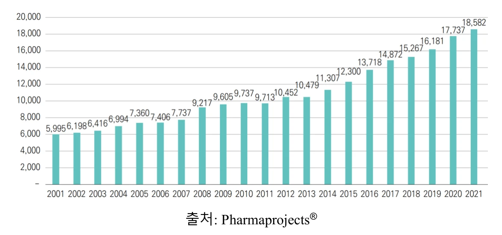
한국제약바이오협회에 따르면 국내의 신약 파이프라인은 2018년 573개에서 2021년에는 1,477개로 2.5배 이상 늘어나면서 파이프라인 수가 빠르게 증가하고 있다. 특히 후보물질 수가 증가하고 임상단계에 진입한 파이프라인의 수도 2.2배 늘어나면서 선진국형 R&D 투자 양상을 띄고 있어 파이프라인의 개수는 지속적으로 늘어날 것이라는 전망이다. [1]
다만 파이프라인의 수가 늘어난다고 하여 신약 개발의 성공률과 사업화 성공률이 높아지는 것은 아니다. 국내 시장은 신약 연구개발이 활발한데 비해 국내 의약품 시장은 아직 글로벌 시장의 1.5% 정도의 규모로 작고 [2], 글로벌에서 성공한 신약도 극히 드물다. 국내 신약은 2023년 5월 현재 기준으로 2022년 11월 30일 대웅제약이 개발한 제2형 당뇨병 치료제가 36번째 국내 신약으로 허가를 받았으나, 36개 신약 중 내수에서 성공적으로 판매된 사례가 있으나, 해외에서 성공한 사례는 찾기 어렵다.
[그림 2. 국산 신약 개발 현황]
출처: Evaluate Pharma, 한국제약바이오협회 재인용, 최형기 수정
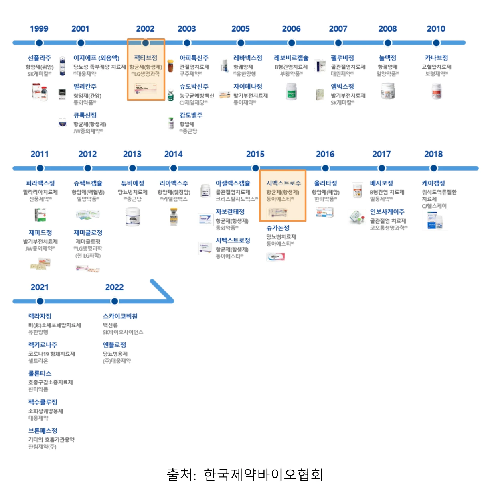
국산 신약을 포함하여 미국 FDA 승인을 획득한 개량신약, 바이오시밀러 등 국내 의약품은 총 27개이지만 실제로 2022년 기준 1,000억원이 넘는 수출 실적으로 글로벌 상업화에 성공한 국산 의약품(단일 제품 기준)은 셀트리온이 개발한 바이오시밀러인 램시마, 허쥬마, 트룩시마와 대웅제약의 나보타 뿐이 없다.[3] 국내 전통 제약사 중에는 나보타가 유일하다. 개발 파이프라인의 수와 R&D 투자금액이 꾸준히 늘어나고 있으나 글로벌 상업화, 특히 선진국에서의 성공적인 상업화는 아직도 어려운 난관으로 남아있는 것이다.
이렇게 선진국 시장에서 국내 의약품의 성공이 어려운 이유는 글로벌 제약바이오 기업 대비 낮은 R&D 투자액/매출액과 낮은 연구효율성으로 볼 수 있다. 글로벌 10대 제약바이오 기업의 평균 R&D/매출액(2021년 기준)은 평균 19.8%로, 국내 10대 전통 제약사 평균인 9.65%(2022년 기준)보다 월등히 높다.
[표 1. 매출액 순위 상위 10개사 R&D 투자액 현황(2021년)]
출처: Zahra and George(2002)
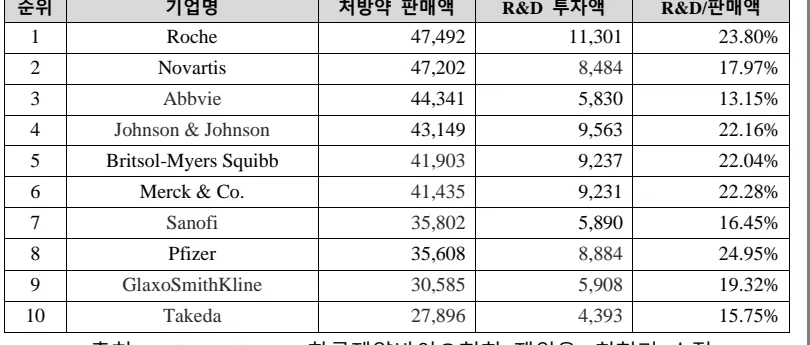
이는 국내 전통 제약기업의 매출 및 이익 구조와도 연결되는데, 국내 시장 위주의 제네릭과 상품 위주의 매출을 보유한 전통 제약사는 영업이익률이 높기가 어려운 환경이다. 바이오시밀러 중심의 글로벌 매출 중심의 국내 바이오 업체인 삼성바이오로직스, 셀트리온, SK바이오사이언스의 영업이익률 40%와 전통제약사의 영업이익률 6.3%만 비교해보아도 국내 전통 제약사의 R&D 투자여력이 높지 않은 것을 파악할 수 있다. (2022년 기준) 뿐만 아니라 국내 전통 제약사의 경우 글로벌 제약사 대비 절대적인 금액도 낮아 블록버스터급 신약의 개발은 어려운 실정이다.
또한 국내 전통제약사는 연구/개발효율성도 상대적으로 낮은 것으로 나타나는데, 2006~2018년 OECD 20개 국가의 혁신 효율성의 분석을 진행한 연구에서 국내 신약개발 연구 효율성은 7위, 개발효율성은 11위, 전반적 효율성은 10위에 그쳤다. 특히 전반적으로 시간이 지나면서 효율성은 개선되고 있지만 연구 단계 이후 임상 개발 등 상업화를 위한 단계에서의 개발효율성이 현저히 낮아 연구 단계 이후 중간 산출물의 규모가 늘어났음에도, 중간 산출물이 임상 개발을 거쳐 허가까지 전환되는데 어려움을 겪고 있다. (박하영, 차민경, 이혜린, 2020)
국내 전통 제약사는 글로벌 대비 낮은 R&D 금액을 가지고 연구/개발의 성공률을 높일 수 있는 방안뿐 아니라 개발된 의약품을 글로벌 사업화에 성공시켜 높은 영업이익률을 달성하여 지속적인 R&D 투자 기반의 경쟁우위 구축을 위한 방안이 필요한 상황이다. 본 사례 연구에서는 이를 위해 대웅제약의 나보타 성공 사례를 흡수역량 및 개방형 혁신 관점에서 분석하고, 소수의 제품만 글로벌 상업화에 성공하는 국내 제약 산업에 글로벌 의약품 성공 요인을 제안하고자 한다.
2 이론적 배경
2.1 흡수 역량
흡수역량을 기업의 관점에서 처음으로 정의한 Cohen & Levinthal에 따르면, 흡수역량은 새로운 외부 정보의 가치를 인식하고, 이를 동화시키고, 상업적 목적에 적용하는 기업의 능력이라고 제시했다(Cohen & Levinthal, 1990). 20세기 초 Schumpeter(1942) 및 Solow(1957)가 기술의 진보와 경제 성장의 상관 관계가 있다는 연구를 발표한 후 산업 조직학자들을 중심으로 혁신을 결정하는 요소에 대한 다양한 실증연구가 진행되어왔다(정미애, 최윤희, 허은녕, 2007).
다만, 해당 연구들은 혁신의 근본적이고 다양한 요소에 대한 연구 보다는 시장 집중도 및 기업의 규모가 혁신에 미치는 영향에 대해서 집중적으로 연구를 진행하였으나 기술적 진보의 더 근본적인 결정요소는 간과했다(Cohen, 1995). 이에 Cohen은 혁신을 시장 중심적 관점에서 바라보던 기존의 연구와 분석에서 벗어나 혁신에 대한 결정 요인을 더 넓게 정의한 연구를 진행하였다. Cohen은 혁신을 결정하는 요소(determinant of innovation)를 슘페테리안이 집중하는 시장 집중도 및 기업의 규모 관점에서 기업 내부 및 조직적 차원으로 관점을 옮겨왔으며, 그에 대한 결과로 혁신에 영향을 미치는 보다 근원적인 요소로 조직의 흡수역량(Absorptive Capacity)을 제시하였다.
흡수역량에서 가장 중요한 요소는 사전 관련 지식이다. 대부분의 혁신 프로세스에서 외부 지식이 중요한 경우가 많으며, 따라서 외부 지식을 탐색하는 능력은 혁신 역량에서 매우 중요한 요소를 차지하고 있고 이는 사전지식의 양과 상관이 있다(Cohen and Levinthal, 1990). 전통적인 흡수역량 이론에서는 외부 지식을 평가하고, 이를 기회로 인식 및 흡수하여 사용하는 능력의 기반은 조직의 사전 관련 지식과 지식의 다양성으로 제시되며 (Cohen and Levinthal, 1990), 이는 기업의 지속적인 경쟁우위를 유지할 수 있는 특징인 기업의 이질성이 기업이 보유한 자원에 기반한다는 자원준거이론과 동일한 맥락에서 해석될 수 있다.
Barney(1991)은 자원준거이론은 가치 있고(Valuable), 희귀하며(Rare), 완벽하게 모방할 수 없을 뿐(Imperfectly Imitable) 아니라 대체할 수 없는(Non-substitutable) 자원(VRIN)이 기업의 경쟁우위의 원천이라고 주장하였으며, 정미애, 최윤희, 허은녕(2007)는 자원준거관점에서 지식기반산업이 경제성장을 주도하는 산업이 되면서 "지식은 기업 혁신의 중요한 자원이며, 지식이 기업에 제공하는 서비스는 기업의 경쟁력을 결정하게 된다"고 했다. 실제로 지식은 한 특정 기업이 다른 기업과 다르게 경쟁우위를 확보하고 유지시키는데 중요한 역할을 하는 '역량'과 관련이 있다. 역량은 지식의 두 종류인 형식지와 조직내에서 통용되는 암묵지를 서로 연결하는 메타 구조라고 표현할 수 있으며, 이러한 메타구조는 지식을 보유한 주체(예. 기업) 또는 맥락에 특화되어 있기 때문에 조직 외부의 주체(예. 경쟁사)가 이를 모방하거나 획득하기가 어려워 경쟁우위를 유발하는 근원이 된다(Melerba and Orsenigo, 2000; 정미애, 최윤희, 허은녕, 2007). 따라서 한 조직이 보유하고 있는 흡수역량은 기업의 흡수하고자 하는 외부 지식의 기반인 사전 지식의 함수이며, 이러한 사전 지식은 해당 기업의 VRIN한 자원으로써 가치를 가지고 있는 것으로 해석할 수 있다. 다만, 자원준거이론은 정적인 개념으로(Priem and Butler 2001), 기업이 보유하고 있는 자원의 양을 중요한 요소로 보았으며, 가치 있는 자원을 새롭게 창출하거나 현재의 VRIN 자원을 어떻게 재구성할 수 있는지에 대해 설명하지 못하는 한계점이 존재하였다 (Ambrosini and Bowman, 2009).
이에 Teece et al.(1997)은 빠르게 변화하는 환경에서 기업이 새로운 자원을 창출하고, 기존 자원의 구성을 새롭게 하거나 재구성하는 능력을 동태적 역량으로 소개하며, 기존의 자원기반이론을 확장하였으며, Floyd and Lane(2000)은 기업의 지식 기반의 자산을 효과적으로 재정의하고 배치하는 관리적 행동(Managerial action) 등을 통해 빠르게 변화하는 경쟁상황에 적응할 수 있다고 주장하였다.
이러한 연구들을 기반으로 Zahra and George(2002)는 Cohen & Levinthal(1990)의 흡수역량에 대한 개념이 제시된 후 지속적으로 진행된 수많은 연구의 결과들과 고찰들을 동태적 역량의 관점으로 재구성하고 정리하였다. 초기 흡수역량에 대한 연구는 흡수역량 자체에 대해서, 그리고 흡수역량을 높이기 위해 배경의 다양성이나 흡수하고자 하는 외부 지식에 관련된 사전 지식을 마련할 수 있는 R&D 투자의 중요성을 강조하고, 획일적이고 정형화된 발전경로를 중시하였다. 반면, Zahra and George(2002)는 흡수역량을 회사의 경쟁우위의 본질과 지속 가능성에 영향을 미치는 동태적 역량으로 인식하였다. 흡수역량을 구성하는 요소(습득, 동화, 변환 및 활용)들마다 가치를 창출할 수 있는 조건들을 식별하고 각 요소간 상호작용을 경쟁우위를 창출하는 유동적이고 다차원적인 발전 경로를 제시함으로써 기업이 경쟁사 대비 지속적인 경쟁우위를 가질 수 있는 분석의 틀을 제공하였다 (Zahra and George, 2002; 김수연, 정강옥, 2016).
[그림 3. 흡수역량의 모델]
출처: Chesbrough(2006), 김석관(2008)에서 재인용
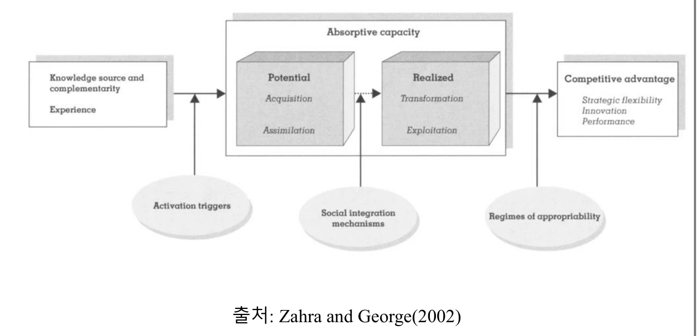
Zahra and George(2002)는 흡수역량을 잠재적 흡수역량(Potential Absorptive Capacity, PACAP)과 실현적 흡수역량(Realized Absorptive Capacity, RACAP)로 구분하였다. Cohen and Levinthal(1990)이 인식과 소화, 그리고 상업화로 구분한 흡수역량을 잠재적 흡수역량(습득과 동화), 실현적 흡수역량(변환 및 활용)으로 재구성하였다. 잠재적 흡수역량과 실현적 흡수역량은 보완적인 역할로 잠재적 흡수역량의 수준이 높다고 하여 조직 내에서 흡수역량이 발휘되고 경쟁우위를 창출할 수는 없다. 잠재적 흡수역량을 실현적 흡수역량으로 전환하기 위해서는 사회통합 매커니즘(Social Integration Mechanisms)이 필요하다. 사회통합 매커니즘은 조직내의 지식 공유와 활용을 용이하게 하는 기재로 잠재적 흡수역량과 실현적 흡수역량의 격차를 줄이고 조직 내외부의 지식을 경쟁우위를 갖게 하는 기반으로 사용할 수 있게 한다 (Zahra and George, 2002).
잠재적 흡수역량의 수준에 영향을 미치는 요소는 외부로부터의 다양한 지식의 원천과 상호보완성 있는 지식, 그리고 과거의 경험이다. 특히 과거의 경험은 회사가 어디서부터 기술의 검색을 시작해야 하는지 방향성을 제시할 수 있다. 다만, 이러한 지식과 경험이 실제 잠재적 흡수역량에 영향을 미치기 위해서는 내외부의 활동 촉매제가 유발이 되어야 하는데, 활동 촉매제로는 혁신 기술의 출현, 정부정책의 변경, 기업의 인수 등 다양한 요소들이 있다. 또한 조직 내에 축적된 흡수역량이 지속가능한 경쟁우위로 전환되기 위해서는 전유성 체계가 영향을 미친다. 전유성 체계는 연구개발의 결과물을 통한 이익을 보호하기 위하여 경쟁사나 타 기업으로부터 모방이나 추격을 막을 수 있는 전략적 수단을 의미한다 (서한결, 정양헌, 2016). 조직은 전유성 체계를 갖춰야만 지속가능한 경쟁우위를 확보할 수 있다.
본 사레 연구에서는 대웅제약의 나보타의 지속가능한 경쟁우위를 가질 수 있었던 요인들을 Zahra and George(2002)가 제안한 흡수역량 모델을 기반으로 분석해보고자 한다.
2.2 개방형 혁신
개방형 혁신은 기업이 기업 내외부의 지식의 흐름을 적절히 활용하여 1) 내부의 혁신을 가속화하고, 2) 혁신의 외부 활용 시장을 확대하는 전략이다 (Chesbrough, 2006). 개방형 혁신의 2가지 기준은 기업이 외부에서 내부로 가져오거나, 내부에서 외부로 보낼 때 기술혁신 과정에 속하여야 만하고, 외부의 교류가 존재해야 하는 것이다. 이 2가지 조건을 만족시키는 모든 활동을 개방형 혁신으로 볼 수 있다 (김석관, 2008).
개방형 혁신은 외부에서 내부로 개방되어 외부로부터 혁신을 위한 아이디어나 기술을 들여오는 내향형 개방과, 내부의 기술이 외부로 보내져 조직 내부의 기존 비즈니스 모델이 아닌 다른 비즈니스 모델로 상업화를 모색하는 외향형 개방으로 나뉜다. 내향형 개방에는 기술 구매, 공동연구, 위탁 연구, Joint Venture 설립, 기업 인수 등이 있으며, 외향형 개방은 기술판매(Licensing-out)과 분사화가 있다. 개방형 혁신은 결국 외부 자원 활용을 통해 혁신 비용을 감소시키고 다른 비즈니스 모델을 통해 추가적인 신규 매출을 창출하게 된다.
[그림 4. 폐쇄형 혁신과 개방형 혁신에서의 비용-수익]
출처: 대웅제약 사업보고서 (2012년~2022년)
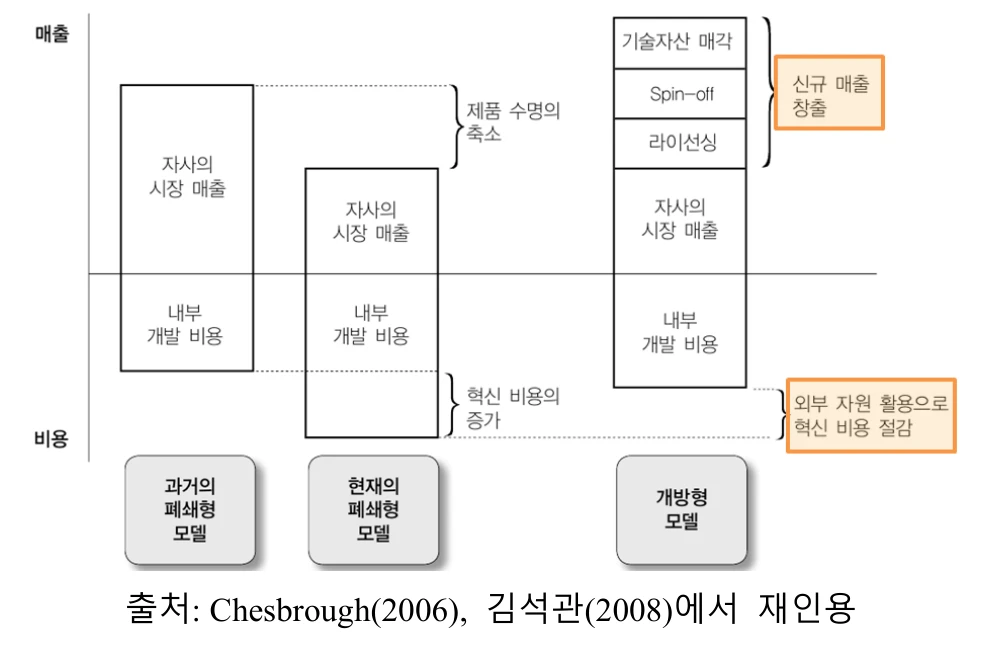
특히 제약 바이오 산업에서는 신약개발에 투입되는 기하급수적으로 늘어나는 R&D 비용과 지속적으로 낮아지는 연구효율성으로 신약 후보물질의 도입/이전 등 개방형 혁신이 활발하게 이루어지고 있다. 대학이나 연구소에서 후보물질 발굴 후 임상개발 비용의 절감을 위해 바이오 벤처에 라이선스 아웃을 진행하고, 기술도입사는 초기 임상 단계 이후 글로벌 빅파마에 다시 한번 기술 이전하여 후기 임상 및 허가, 판매를 진행하는 Sub-license 구조도 자주 볼 수 있다 (김석관, 2008).
본 사례 연국에서는 대웅제약이 나보타의 글로벌 상업화 성공을 위해 개방형 혁신 전략을 택한 이유와 개방형 혁신의 방법에 대해 분석하고, [그림 4]에 제시된 것과 같이 나보타의 개방형 혁신 모델로 인한 신규 매출 창출 효과 및 혁신 비용 절감 효과에 대해서도 분석해보고자 한다.
제 2장 대웅제약의 나보타 사례 연구
1 대웅제약 소개
대웅제약은 '의약보국, 순리추구, 자아실현'이라는 경영이념으로 1945년 조선간유제약공업사로 설립된 제약사이다. 대웅제약은 전문의약품 및 일반의약품을 개발 및 제조, 판매를 영위하고 있는 국내 전통 제약사 중 하나로, 2022년 기준 별도 매출액 기준 1조 1,612억원, 영업이익 1,059억원, 순이익 486억원의 국내 6위의 제약사이다(매출액 기준). 대표적인 제품은 1974년 독자 개발에 성공한 간장약 '우루사' 및 종합비타민제인 '임팩타민', 고혈압치료제 '올메텍', 미간주름 치료제인 '나보타' 등이 있다. 최근에는 대웅제약의 첫 신약 허가 이후 20년만에 위식도역류질환 치료제인 ‘펙스클루정’(국내 신약 34호)과 제2형 당뇨병 치료제인 ‘엔블로정’(국내 신약 36호)을 출시하였다.
대웅제약은 창업 초기부터 외국계 제약사가 개발한 오리지널 의약품을 수입하여 국내에 판매하는 사업모델을 유지하면서 다국적 제약사와의 협력을 통한 확장전략을 통해 성장하였다. 매출 상위 10개 제품의 70%가 다국적 제약사 오리지널 의약품일 정도로 해외 제약사의 의존도가 높았다. 1982년에는 Eliy Lilly사와 합작하여 대웅릴리제약(주)를 설립하였고, 알피쉐러와의 합작법인인 한국알피쉐러 등을 설립하고, 다국적 제약사의 오리지널 의약품을 독점적으로 판매하며 빠르게 성장하였다. 이는 다국적 제약사와 국내 제약사와의 win-win 전략으로, 국내에 진입하고 싶은 다국적 제약사는 국내 의약품 영업 네트워크 및 유통망을 지배하고 있는 국내 전통제약사의 도움이 필요하였으며, 국내 제약사는 시장 지배력을 높이기 위해 신규한 기전으로 더 나은 효능을 가진 오리지널 의약품이 필요했기 때문이다.
대웅제약은 다국적 제약사와 제휴를 통해 성장하는 전략을 취함과 동시에 지속적으로 자체 개발 의약품을 연구하고 개발하는데 인력과 비용을 투자했다. 1974년 부설 제약연구소를 설립하고, 1983년에는 중앙연구소를 설립하여 운영하였다. 그리고 첫 결과물로 2001년 당뇨병성 족부궤양치료제인 이지에프외용액을 국내 첫 바이오 신약이자 국내 2호 신약으로 출시하였다. 이후 특수제형 제네릭이나 개량신약을 위주로 개발해왔으나 개발 난이도가 높은 바이오 의약품 및 신약의 개발이 더디었다.
2000년대 후반부터 빠르게 R&D 비용을 늘리면서 2014년에는 미간주름 치료제 '나보타', 2021년에는 위식도역류질환 치료제인 펙스클루정 등 자체적으로 개발하고, 출시한 제품이 성공적으로 사업화가 진행되었다. 특히 나보타의 경우 의약품 시장의 핵심 시장인 미국에서 빠르게 판매가 이루어지고 있으며, 수출액이 증가하면서 영업이익률이 획기적으로 개선되고 있다. 또한 대웅제약의 20년만의 신약인 위식도역류질환 치료제 ‘펙스프라잔’의 경우도 2022년 한국에서 출시가 되었고, 15개 국가에 1조 2천억원의 규모의 기술이전 성과를 달성하였다. 현재는 해외에서도 빠르게 임상개발 및 허가 프로세스가 진행되면서 지속적인 연구개발 성과가 나타나고 있다. 이러한 성과는 2022년 사상 최대의 매출액과 영업이익이라는 실적으로 이어졌다.
[그림 5. 대웅제약 영업이익 및 영업이익률 추이]
출처: 국제미용성형수술협회(ISAPS), 교보증권 분석보고서(2022)에서 재인용
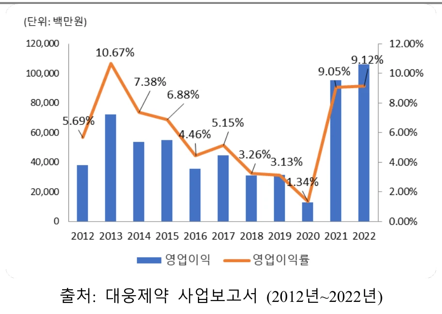
2 시장 분석
2.1 미용의료 시장 분석
글로벌 미용의료 시장의 성장은 미용에 대한 관심도 증가 및 미용의료를 원하는 연령대가 20대까지 확장되면서 거스를 수 없는 흐름이 되고 있다. 이는 안티에이징을 원하는 35세 이상 연령의 여성을 중심으로 시장이 성장했던 과거와는 달리, 최근에는 15세~34세에 이르는 MZ세대에서도 미용의료의 수요가 증가하고 있으며, 남성의 미용의료 수요도 지속적으로 증가하고 있기 때문이다. 국제미용성형수술협회 자료에 따르면, MZ세대의 보툴리눔 톡신 시술 건수는 2015년 108만건에서 2020년 154만건으로 5년간 42.6% 증가하였으며, 전세계 남성의 미용시술 시행건수은 2014년 137.8만건 대비 2020년 206.1만건으로 49.5% 성장하였다.
미용의료 시장은 크게 1) 미용‘성형’ 시장과 2) 미용‘시술’ 시장으로 나뉘며, 미용의료시장은 미용시술시장의 성장이 주도하고 있다. 미용성형은 쌍꺼풀 수술, 코 성형, 안면윤곽 성형, 가슴성형, 지방 흡입 등 주로 전통적인 외과적 수술이 주를 이루고 있다. 미용시술은 필러나 보툴리눔 톡신, 리프팅 등 최소침습, 비침습적 시술을 뜻하는데 미용성형과 미용시술 건수의 격차가 좁았으나 시간이 지날 수록 미용시술의 건수가 전체 비중의 60%정도를 차지할 정도로 미용시술의 수요가 늘어나고 있다.
[그림 6. 글로벌 미용성형수술 시행건수 추이]
출처: Precedence Research, 단위: 십억달러
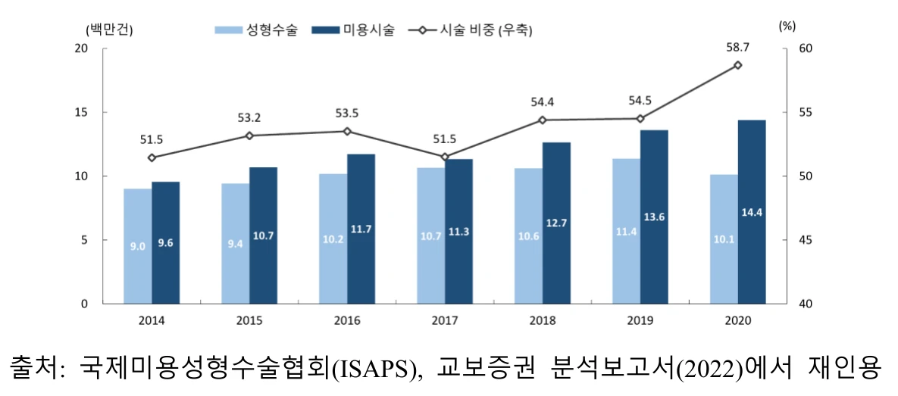
이렇게 미용시술 비중이 높아지는 이유는 미용시술은 최소침습 또는 비침습적 시술로 성형수술 대비 비용이 저렴하고, 안전하며, 시술시간이 짧아 회복시간도 빠르며, 흉터가 적게 남는다는 장점이 있기 때문이다. 꾸준히 늘어가는 미용시술 중에서도 가장 시장이 크고 성장률도 높은 시술은 미용용 보툴리눔 톡신 시술이다. 보툴리눔 톡신 제제는 전체 미용시술의 43.2%를 차지하며, 성장률도 지난 5년간(2015~2020년) 34.3% 성장하였다.
2.2 보툴리눔 톡신 제제 시장 분석
2.2.1 보툴리눔 톡신 제제 시장 전망
식약처의 설명의 따르면, 신경 독소인 보툴리눔 톡신은 신경전달물질인 아세틸콜린의 방출을 억제함으로써 근육을 이완시키는 역할을 한다. 보툴리눔 톡신 제제는 근육을 움직이는 신경전달 물질의 방출을 막아 근육의 사용을 저하시키는 성분을 함유한 의약품이다.
보툴리눔 톡신은 1973년 미국의 안과의사 앨런 스코트에 의해서 우연히 발견된 후 1989년 눈꺼풀 떨림, 사시 등을 위한 치료제로 개발되어 미FDA에 승인을 받았다. 눈꺼풀 경련 치료를 위해 보툴리눔 톡신을 주사한 부위에 주름이 사라지는 것을 발견하면서 주름 치료제로 사용되기 시작하였으며, 2002년에 미용용 보툴리눔 톡신으로 허가를 받았다. 국내에도 치료용 제제로 1995년에 대웅제약이 보툴리눔 톡신 제제의 오리지널 의약품인 앨러간(Allegan)의 Botox®(이하 보톡스)를 수입을 시작했고, 2002년부터 빠르게 시술 건수가 늘어났다.[4]
글로벌 보툴리눔 톡신 시장은 현재 2022년 기준 약 72억 달러로 10년간 연평균 9.56%로 빠르게 성장하여 2032년에는 180억 달러 규모까지 성장할 것으로 예상된다.[5]
[그림 7. 보툴리눔 톡신 시장 전망(2023년~2032년)]
출처: 교보증권
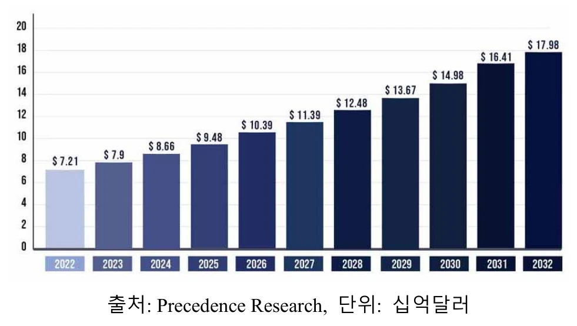
보툴리눔 톡신 제제 시장의 빠른 성장이 예상되는 요인은 다음과 같다.
1) 보툴리눔 톡신 시장의 43% 정도를 차지하고 있는 미국시장에서 시술대상 여성 중 6%만 보툴리눔 톡신 시술을 받고 있어 아직 시장 잠재력이 매우 크기 때문이다.[4] 또한 상기 확인한바와 같이 미용시술에 대한 수요가 늘어나고 있으며, 보툴리눔 톡신 제제는 1회 시술에 그치는 것이 아니라 지속적으로 투여해야 하기 때문에 평균 시술 횟수가 증가하고 있어 보툴리눔 톡신 제제 시장의 잠재력은 크다고 볼 수 있다.
2) 미국/유럽 등 선진국 시장뿐 아니라 중국 및 개발도상국의 보툴리눔 톡신의 시술 건수가 늘어날 것으로 예상하기 때문이다. 특히 중국 시장의 경우에는 보따리상이 유통한 제품을 이용한 불법시술에 대해 정부가 강력한 단속을 시작하였으며, 이로 인해 정식 허가 제품 중심의 시장으로 변화하고 있다. 또한 2020년에는 기존 글로벌 보툴리눔 톡신 상위 플레이어인 Ipsen(입센)과 국내사 휴젤의 제품이 중국 허가를 득하면서 마케팅 증가를 통한 시장의 증가가 예상된다.
3) 마지막으로 치료용 보툴리눔 톡신의 적응증 확대를 통한 매출 증가가 예상되기 때문이다. 보툴리눔 톡신은 뇌졸증, 편두통, 다한증 등 여러 질병의 적응증을 확보하였으며, 이외에도 현재 미국에서 진행중인 치료용 보툴리눔 톡신의 임상이 250개로 굉장히 활발하게 연구가 진행되고 있어 치료용 보툴리눔 톡신의 성장 가능성이 높다고 볼 수 있다.
2.2.2 보툴리눔 톡신 제제 경쟁 분석
보툴리눔 톡신 제제로 가장 유명한 제품은 앨러간의 보톡스가 있다. 보톡스가 미용 목적으로 견고한 위치를 점유하고 있어 보툴리눔 톡신의 일반명사로 보톡스로 사용되고 있을 정도로 보톡스의 시장 지배력은 막강하다. 앨러간의 보톡스는 치료용 뿐 아니라 미용용으로도 3가지 적응증으로 가장 많은 적응증을 가지고 있어 글로벌 보툴리눔 톡신 시장의 75~80%를 점유하고 있는 것으로 추정된다. 앨러간의 보톡스 외에도 점유율 2위인 입센의 Dysport(디스포트)와 Merz(메르츠)사의 Xeomin(제오민)이 있는데, 보톡스와 디스포트가 시장을 독식하고 있는 구조이다.
[표 2. 글로벌 주요 시장의 보툴리눔 톡신 제품 허가 현황(최초 승인 연도)]
출처: Choudhury et al.(2021)
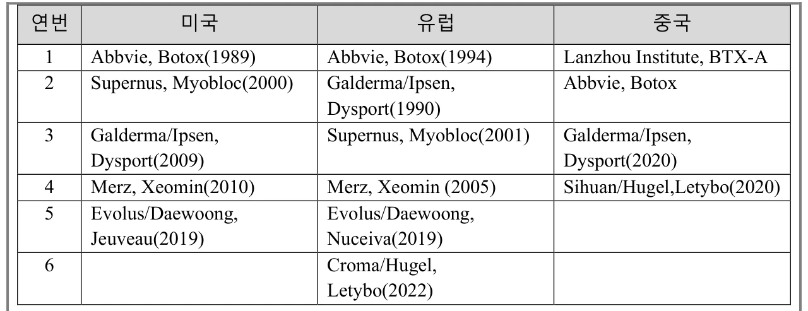
시장이 독식 구조로 유지되고 있는 가장 큰 이유는 1) 보톡스가 미용용 및 치료용 적응증을 가장 많이 확보하고 있으며, 2) 보툴리눔 톡신은 바이오시밀러로 개발이 되지 못하기 때문이다.
[표 3. 보툴리눔 톡신 제품별 FDA 승인 적응증 비교]
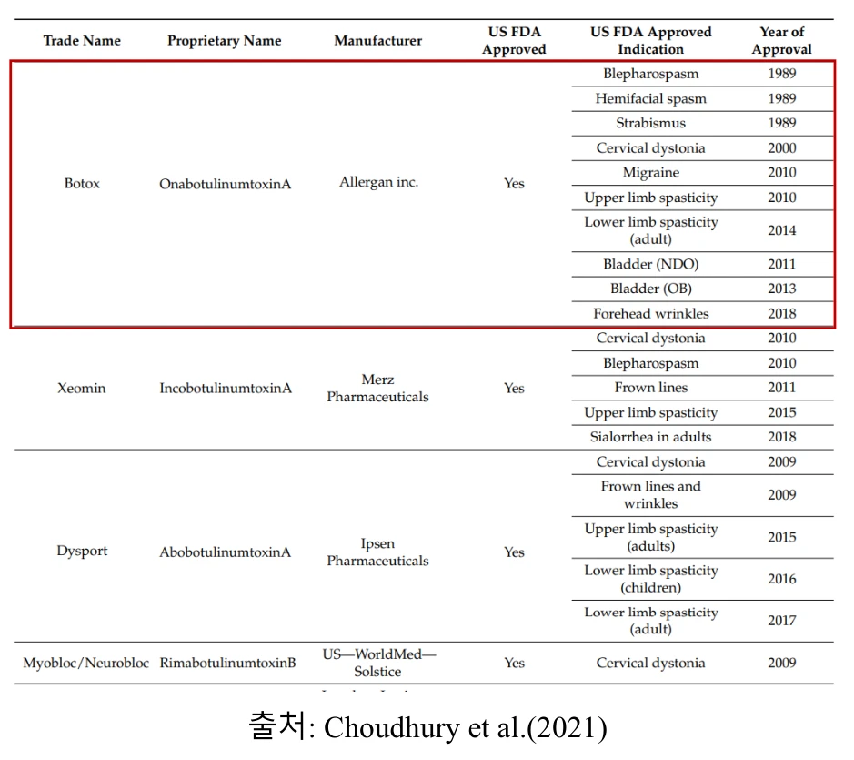
1) 보톡스가 가장 많은 적응증 보유 : 보톡스가 현재 미용용 및 치료용 보툴리눔 톡신 제제에서 가장 많이 사용되는 이유는 타사 제품대비 허가 받은 적응증이 많이 때문이다. 특히 미용용 제제의 경우, FDA에서 허가된 적응증의 경우, 보톡스는 3개(미간주름, 눈가의 잔주름, 이마주름)인 반면에, 디스포트 및 제오민은 1개(미간주름)의 허가를 가지고 있다. 물론 보툴리눔 톡신 제제는 미용용의 적응증 1개로 허가를 받아 Off-label로 얼굴의 다른 곳에 사용할 수는 있다. 하지만 안전성과 유효성이 보장된 제품이 수요가 많을 수밖에 없으며, 시술 수가 늘어나면 안전성, 유효성에 대한 임상적 검증이 지속적으로 이루어지고, 이를 기반으로 다시 수요가 늘어나는 선순환이 일어나는 구조로 보톡스가 현재는 가장 높은 점유율을 가지고 있다.
2) 바이오시밀러 개발이 어려움: 바이오 의약품은 크게 재조합 단백질 의약품, 백신, 톡신, 항체의약품, 유전자 치료제로 나눌 수 있으며, 현재까지 바이오시밀러는 재조합 단백질 의약품과 항체의약품에 적용되어 개발되었다. 식약처의 '생물학적제제 등의 품목허가, 심사 규정'에 따르면 동등생물의약품(바이오시밀러)이란 이미 제조판매, 수입품목 허가를 받은 품목과 품질 및 비임상, 임상적 비교동등성이 입증된 생물의약품을 뜻하는데, 단백질의 경우 구조가 밝혀져 있기 때문에 유사하게 만들 수 있으나, 톡신 및 백신 등 생체를 이용한 제품은 단백질 구조가 매우 복잡하여 재조합 기술로 유사하게 단백질 구조를 만들어내기 어려워 시밀러를 만들기 어렵다. 따라서 현재 디포트, 제오민 등 보툴리눔 톡신 제제가 시밀러처럼 보이지만 모두 다른 균주이며, 유사한 효능이 발현되도록 개발된 신약이다. 따라서 바이오시밀러가 아닌 신약인 보툴리눔 톡신은 적응증 외삽1이 불가능하고, 임상시험을 통해 적응증별 허가를 받아야 하기 때문에 개발비용이 높고, 특히 안정적인 균주의 확보 및 전용 제조 기반이 필요하기 때문에 진입장벽이 높다.
또한 의약품 시장은 보수적인 시장으로 효능과 안전성에 현저한 차이가 있지 않은 경우 처방을 바꾸지 않는 경향이 있고, KOL(Key Opinoion Leader)의 처방을 따르는 경우가 많기 때문에 보톡스나 디스포트와 같이 출시된 지 오래되어 다년간 쌓인 임상 데이터, 예상되는 효능과 안전성, 그리고 익숙한 시술법 등이 시장의 진입장벽으로 작용하여 신규 제품이 출시되더라도 시장 진입 자체가 굉장히 어려운 시장이다. 다만, 보톡스는 프리미엄 브랜드 전략으로 매년 가격이 증가하고 있다. 골드만삭스에서 2018년 9월 현지 의사들을 대상으로 한 설문조사에서 나보타 가격을 보톡스 대비 30% 할인시 60%, 40%할인시 70%의 의사들이 나보타를 사용할 것이라고 응답했다. 따라서 시장의 신규 제품이 보톡스와 동일한 분자량, 시술방법, 동일한 효능/안전성 뿐 아니라 가격경쟁력도 보유하면 시장 점유율에 변동을 줄 수 있는 기반이 될 것으로 볼 수 있다.
국내 보툴리눔 톡신 제제 시장은 글로벌 시장이 독과점 시장인 것과는 다르게 굉장히 연구개발이 활발하게 진행되고 있으며 식약처 허가를 받아 판매하고 있는 기업이 16개, 제품이 37개에 달해 경쟁이 매우 치열한 시장이라고 볼 수 있다.[7] 대표적으로는 한국앨러간의 보톡스, 대웅제약의 나보타, 메디톡시의 메디톡신, 휴젤의 보툴렉스, 휴온스의 리즈톡스 등이 있다.
국내 보툴리눔 톡신 제제 시장은 대웅제약이 1995년도에 보톡스를 국내에 수입하고 미용 목적으로 사용하기 시작하면서부터 2000년대부터 시장이 급성장하며 보툴리눔 톡신 개발사들이 많아지기 시작했다.
국내 제품으로는 2006년 메디톡스가 메디톡신을 허가 받으면서 가장 빠르게 보툴리눔 톡신 제제 시장에 출시되었으며, 이후 2009년에는 휴젤의 보툴렉스가 2번째로 식약처 허가를 받고, 대웅제약이 2014년 세번째로 허가를 받으면서 수입제품과 국내산 제품의 경쟁이 치열해졌다. 이에 국내 보툴리눔 톡신 시장은 글로벌 시장과 다르게 경쟁이 치열한 레드오션이 되어가고 있으며, 그 결과 보툴리눔 톡신 가격이 떨어지는 현상이 일어나는 특이한 현상이 일어나고 있다. 이러한 시장 현황은 국내의 대표적인 보툴리눔 톡신 제제 개발/판매사가 적극적으로 해외 진출을 시도하고 있는 이유이다.
3 대웅제약의 보툴리눔 톡신 제제: 나보타(NABOTA)
3.1 나보타의 경쟁력
나보타는 대웅제약이 5년간 자체연구개발을 통해 개발에 성공한 보톨리눔 톡신 제제로, 2013년 국내 허가, 2019년 미국 FDA 품목허가를 받은 제품이다. 나보타는 미국에서 Jeuveau(주보)라는 브랜드로 출시되었으며, 2013년 9월에 기술이전 계약을 체결한 Evolus(이하 에볼루스)라는 글로벌 파트너사를 통해서 판매되고 있다.
[그림 8. 나보타(좌) 및 Jeuveau (우) 제품 사진]
출처: 교보증권
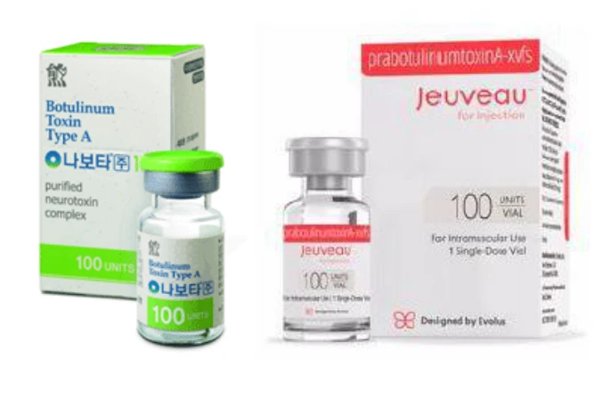
나보타는 국내뿐 아니라 아시아 최초로 미국 FDA에서 승인을 받은 보툴리눔 톡신 제제이다. 또한 나보타는 미국FDA 허가 제품 중에는 보톡스와 동일한 분자량인 900kDa를 지닌 유일한 제품으로, 글로벌 시장 진입하기 위해서 업계 표준 격인 보톡스와 동일한 분자량으로 개발하여 시장 초기 진입이 수월하였다.
[표 4. 분자량 크기별 보툴리눔 톡신 비교]
출처: Evolus
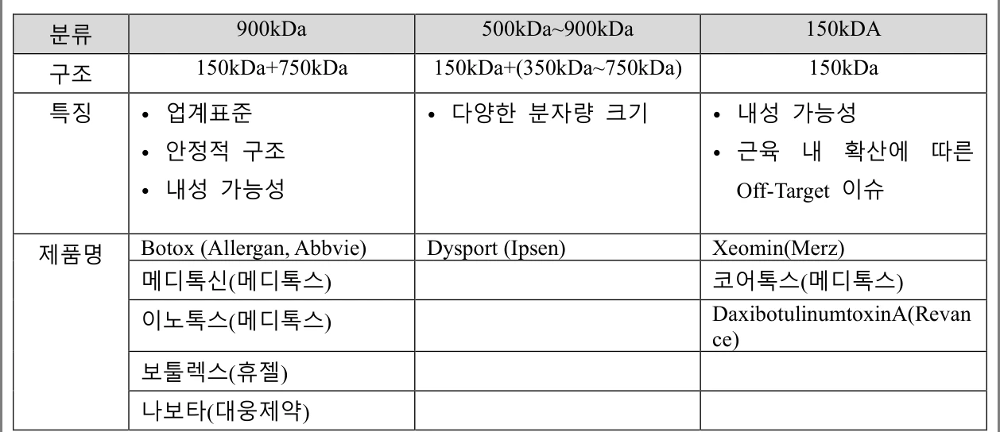
나보타는 보톡스와 동일한 효능과 안전성을 목표로 하였으며, 시술방법 및 느낌에 있어서도 의사 입장에서 동일한 시술을 할 수 있도록 하여 보톡스를 사용하던 의사들이 시술에 불편함이 없도록 개발 전략을 설정하였다. 따라서 제품 출시 후 의사대상 마케팅에서도 보톡스와 1대 1 도징(Dosing)을 강조하였다. 나보타는 공식적으로 1대1 도징을 처음 검증을 받은 제품으로 보톡스를 사용하는 동일한 감각으로 의사들이 나보타를 처방할 수 있어 제품의 전환이 용이하다.
나보타는 임상에서 효능면에서도 보톡스와 비열등성을 입증했다. FDA에서 허가를 받은 적응증은 미간 주름으로, 미간 주름의 개선을 GLS(Glabellar Line Scale)2라는 척도로 하게 되는데 초기 2개의 임상3상(EV-001, EV-002)에서 나보타와 플라세보를 이중맹검 방법으로 진행했다. 시술 후 30일째 연구자와 피험자 모두 GLS지표가 2단계 이상 주름 개선됐다고 응답한 비율이 EV-001에서 67.5%, EV-002에서 70.4%를 나타냈으며, 이에 반해 위약군(플라세보)에서는 1.2%, 1.3%로 응답하여, 나보타의 효능을 입증하였다.
또한 글로벌 임상에서는 플라세보뿐 아니라 보톡스를 대조약으로 직접 비교하는 임상3상(EV-003)을 진행하였는데, 시술 30일후에 진행된 1차 유효성 평가에서 나보타는 87.2%, 보톡스는 82.8%의 피험자에서 GLS 0또는 1단계로 개선되었다고 응답하면서 나보타가 보톡스 대비 비열등한 주름개선 효과를 입증했다. 이번 시험은 시술 150일 후에는 2차 유효성 평가를 진행했는데 이때도 보톡스 대비 동등 이상의 결과가 나왔고, 안전성에서도 부작용은 보고되지 않았다.
[그림 9. 글로벌 임상3상(EV-003) Primary Endpoint 비교]
출처: 본인 작성
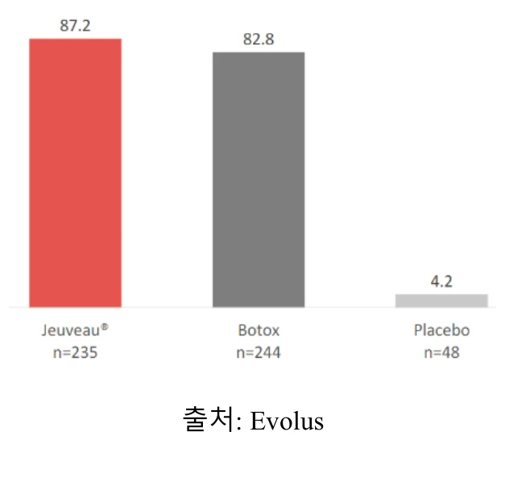
보톡스와 동일한 효능과 안전성을 보유한 나보타를 미국 시장에서 보톡스 대비75~80% 수준의 가격으로 런칭하였으며, 이러한 우수한 제품력과 가격우위는 나보타의 빠른 매출 성장의 원천이 되었다. 나보타의 경쟁우위를 다시 한번 정리하면 다음과 같다.
[표 5. 나보타의 경쟁우위]
출처: 본인 작성
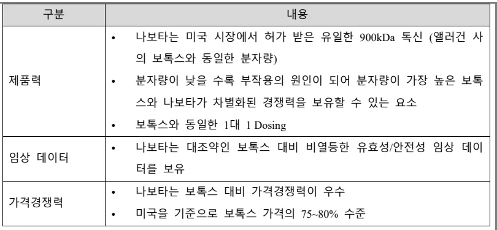
3.2 나보타 개발 경위와 혁신 요소
[그림 10. 나보타 개발 경위 및 혁신요소]
출처: Zahra and George(2002)을 재구성
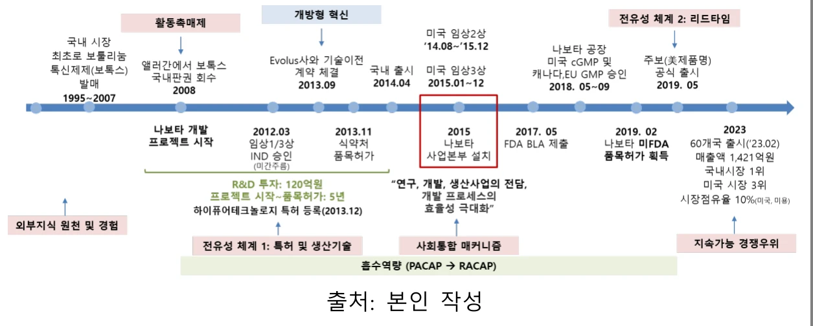
나보타는 2008년부터 시작된 프로젝트로, 기존의 바이오 의약품 연구, 개발, 생산의 사전 경험과 국내 시장에서 오리지널 보툴리눔 톡신 제제인 앨러간의 보톡스를 수입/판매를 통한 지식이 확보가 되어있었다. 이러한 지식과 경험을 바탕으로 대웅제약은 2008년 개발 시작부터 2013년 11월 국내 품목허가까지 5년이라는 짧은 시간에 품목허가까지 가능했다. 국내 출시 후 나보타의 글로벌 진출에 집중하기 위해 나보타 전담 사업본부를 출범하였으며, 이를 기반으로 기존에는 경험해보지 못한 cGMP 구축 및 실사, 그리고 미국에서의 품목허가 절차들을 타사보다 빠르게 진행할 수 있었다. 나보타는 에볼루스를 통해 미국 개발, 출시, 마케팅을 진행하였으며, 2023년말 기준 매출액 1,421억원, 미국시장 점유율 3위, 글로벌 60개국 출시라는 성과를 달성했다.
4 대웅제약의 흡수역량
Zahra and George(2002)의 흡수역량 모델은 동적시장에서 한 조직이 흡수역량을 통해 지속가능한 경쟁우위를 구축할 수 있는 혁신요소를 제시한다. 본 장에서는 나보타의 성공적인 사업화의 혁신 요소들을 Zahra and George(2002)의 흡수역량 관점에서 분석해보고자 한다.
[그림 11. 대웅제약의 흡수역량 모델 및 혁신요소 요약]
출처: 식품의약품안전처 ‘의약품 품목허가 및 신고 안내서’(2021)
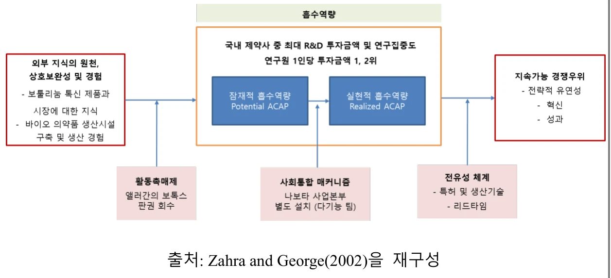
4.1 외부 지식의 원천, 상호보완성 및 경험
흡수역량에서 가장 중요한 요소인 다양한 형태의 외부 지식 원천은 잠재적 흡수역량에 크게 영향을 미치며, 이러한 지식은 인수나 라이선싱 및 계약을 통한 구매, R&D 컨소시엄, M&A 등 다양한 경로로 확보될 수 있다. 다만, 단지 지식을 보유하고 있다는 사실만으로 잠재적 흡수역량이 개발되는 것은 아니고 지식의 보완성이 중요한데 이는 Cohen and Levintha(1990) 연구와도 결을 같이 한다. 또한 잠재적 흡수역량에 영향을 미치는 요소는 과거의 경험이며, 기업 및 조직은 과거의 경험을 통해 지식 검색의 영역을 정함으로써 미래의 습득 능력 개발에 영향을 미쳐 습득과 동화의 역량을 증가시키는 중요한 요소이다. 대웅제약은 앨러간과의 보톡스 독점 판매 계약을 통해 보툴리눔 톡신 제제를 개발함에 있어서 가장 중요한 생산 및 임상 개발에 관련된 사전 지식 및 경험을 보유하고 있었으며, 이를 신규한 보툴리눔 톡신을 개발하기 위해 필요한 지식들을 습득하고 동화하는데 사용할 수 있었다.
4.1.1 보툴리눔 톡신 제품과 시장에 대한 지식
대웅제약은 1995년부터 2009년까지 14년간 보톡스의 오리지널사인 앨러간으로부터 독점적으로 수입하고 판매한 경험을 통해 보톡스 시장에 대한 지식 및 이해를 풍부히 쌓아왔다. 보톡스를 수입하고 판매한 경험을 통해 얻을 수 있는 지식과 노하우는 다음과 같다.
1) 보툴리눔 톡신 제제 개발 및 허가에 대한 지식
의약품을 수입허가를 받기 위해서는 '수입의약품등 관리규정'에 따라 식약처의 품목허가를 받거나 신고해야 국내로 수입 및 판매가 가능하다. 앨러간의 보톡스는 국내에서 허가되지 않은 품목으로 신고대상의약품이 아닌 품목 허가 대상이었으며, 수입품의 품목허가는 수입업자가 직접 진행하기 때문에 대웅제약은 품목 허가에 필요한 자료들을 오리지널사인 앨러간으로부터 수령하여 품목허가 절차를 진행하였다. 이 때 제출하는 자료는 신약의 품목허가와 동일한 자료를 제출하게 된다.
[표 6. 품목허가 대상 의약품의 허가 제출자료]
출처: 식품의약품안전처 ‘보툴리눔 독소 제제의 심사자료 작성 가이드라인(품질)’(2008)
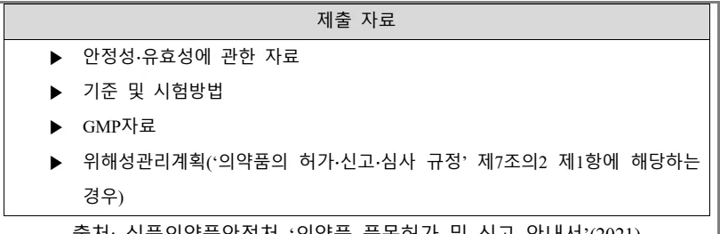
특히 수입 대상 제품의 안전성∙유효성에 관한 자료 및 기준 및 시험 방법에 대한 자료는 임상시험의 내용뿐 아니라 바이오 의약품 개발의 핵심 내용인 생산, 분리 및 정제 공정에 대한 자료 및 의약품 품질에 맞는 기준의 설정, 그리고 그 기준에 품질이 부합한지 시험할 수 있는 시험 방법 및 그 근거 등에 대한 자세한 내용들이 제출 자료에 포함이 되어 있다. 수입업자의 경우 품목허가 승인 과정에서 식약처의 심사 및 질의 등에 대응해야 하기 때문에 이러한 품목허가 자료를 앨러간으로부터 받아 충분히 검토하고, 분석하고, 이해 및 숙지하는 과정을 거치며 이러한 과정을 통해 해당 지식에 대한 내재화가 필요하다.
[표 7. 보툴리눔 톡신 제제 기준 및 시험방법 근거자료 제출 범위]
출처: 이제욱(2015)
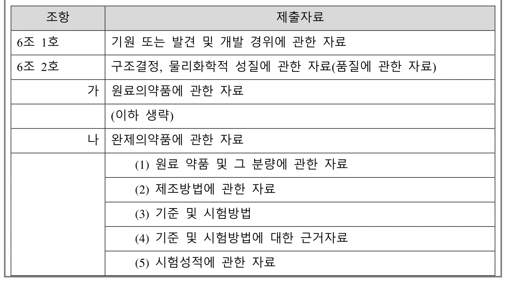
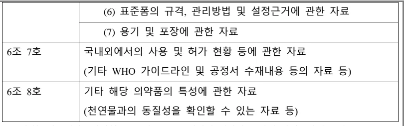
또한 오리지널 제품인 보톡스가 새로운 적응증을 확보할 때마다 국내에서도 추가 적응증을 위한 품목허가를 진행해야 하는데, 이 때마다 새로운 적응증에 대한 연구 자료, 임상 자료들을 확보할 수 있다. 때문에 대웅제약은 이 때 품목허가를 준비하면서 쌓인 보툴리눔 톡신 제제 개발 및 허가에 대한 지식과 경험 등을 쌓을 수 있었다.
2) 고객(의사)와의 상호작용을 통해 확보한 제품 및 시장에 대한 지식
제품을 개발함에 있어서 시장에 대한 지식은 매우 중요한 요소이다. 특히 개발에 착수하기 전에 시장의 규모 및 성장성 등의 조사도 중요하지만, 잠재적 고객 및 전문가 인터뷰 등 시장 조사를 통해서 기존의 제품과의 차별화 요소를 무엇으로 할지, 어떻게 시장에 접근할지에 대한 전략을 구축하는 것들도 중요한 단계이다.
대웅제약은 보툴리눔 톡신 제제 중 전 세계에서 가장 많이 팔리고 효과와 안전성이 검증된 오리지널 제품인 보톡스를 판매하면서 실제 고객인 의사와의 네트워크를 보유하고 있었다. 실제로 의약품 영업 현장에서는 제네릭과는 다르게 오리지널 제품은 의사들의 수요에 의해서 사용되어지는 경우가 많다. 이 때문에 오리지널 의약품인 보톡스를 기반으로 대웅제약은 국내의 보톡스 시술 의사들과 네트워크뿐 아니라 의약품 처방에 큰 영향을 미칠 수 있는 KOL(Key Opinion Leader)과의 관계를 통해 시장 정보 및 실제 임상 현장에서만 얻을 수 있는 정보를 획득하여, 이를 제품 개발에 적용할 수 있었다. 예를 들면 실제 시술 후 제품별 효능의 정도, 부작용, 환자의 만족도, 시술 시 제품별 장단점 정보 등이 있다.
4.1.2 바이오 의약품 생산시설 구축 및 생산 경험
바이오 의약품은 합성의약품과는 다르게 생산이 매우 중요한 요소로 작용한다. 일반적인 신약개발의 과정을 구분하면 1) 후보물질 발굴 및 최적화 단계인 발견(Discovery) 단계, 2) 비임상 및 임상시험 단계인 개발(Development) 단계, 3) 상업화(Marketing) 단계로 구분할 수 있다. 합성의약품 및 바이오 의약품 모두 후보 물질을 발굴하고 최적화하는 단계가 가장 어렵고 시간이 많이 드는 과정이지만 이 과정을 거친 후보물질이 임상개발 단계를 거쳐 출시가 되는 실제 의약품이라고 할 수 있다.
바이오 의약품은 생산이 개발 단계에 포함되는 합성의약품과는 다르게 생산 과정이 ‘발견 단계’에 포함이 된다. 이는 바이오 의약품에서 생산 단계가 굉장히 중요한 단계이기 때문이며, 이제욱(2015)은 후보물질의 최적화, 세포주 개발, 생산공정 개발을 포함하는 전체 공정(Process) 자체가 의약품(Product)의 일부라고 말하며 바이오 의약품에서 생산 공정의 중요성을 강조하였다. [그림 12]에서 붉은 점선으로 표시된 부분이 바이오 의약품 개발단계 중 ‘발견’ 단계이다.
[그림 12. 합성의약품과 바이오 의약품 개발 과정 비교]
출처: 한국보건산업진흥원 ‘바이오의약품 산업 분석 및 정책 연구’
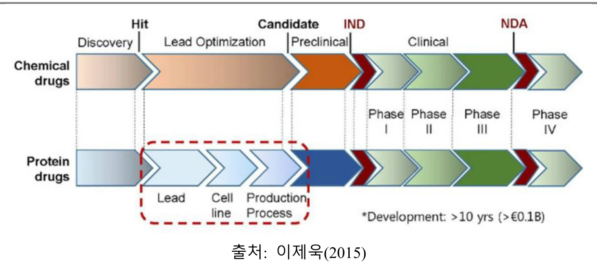
이렇게 생산 공정이 중요한 이유는 바이오 의약품은 고분자 물질을 기반으로 하며, 생산할 때 수식물(modifications)이 단백질에 결합되게 되는데 수식물의 종류에 따라 체내에 유입되었을 때 면역반응으로 인한 부작용(면역원성)이 일어날 수 있기 때문이다. 면역원성을 유발하는 수식물의 종류와 양은 아미노산의 서열, 세포주, 배양 및 정제 조건 등에 따라 결정되는데 이를 생산 공정의 최적화를 통해 최소화할 수 있기 때문이며, 이에 초기부터 생산 공정에 대한 고려가 포함이 되어야 한다. (이제욱, 2015)
대웅제약은 국내 신약이 본격적으로 개발이 시작된 1990년대부터 바이오 의약품을 개발함으로써 현재까지 30년간 바이오 의약품 개발 및 생산의 노하우를 쌓아왔다. 국내 1호 바이오 신약이자 국내 2호 신약인 ‘이지에프 외용액’을 1988년부터 13년간 초기연구부터 임상시험까지 완료하여 2001년 식약처 승인 후 출시하면서 국내 바이오 의약품의 첫 개발사의 지위를 확보하였다. 바이오 신약 공정개발은 자체 공정이 기술 표준이 되는 핵심으로, 대웅제약은 이지에프 외용액 개발을 통해 이미 다른 국내 제약사 대비 선발적으로 바이오 생산 공정에 대한 지식 및 이해 뿐 아니라 바이오 연구개발 공정의 핵심 기술인 1) 배양 공정 기술, 2) 정제 공정기술, 3) 공정 시료 분석 기술 등을 내부에 구축하고 노하우를 쌓을 수 있었다.
이지에프외용액의 주성분인 이지에프(EGF, 상피세포성장인자)를 주성분으로 하는 당뇨 족부궤양 치료제로, 동일 성분으로는 ‘세계 최초’로 개발/생산되어 출시된 의약품이다. 이지에프는 기존에 발견된 물질로 외국에서도 잘 알려진 물질이었으며, 많은 글로벌 제약사들이 이 성분을 기반으로 의약품을 개발하기 위해서 투자를 진행하였다. 다만, 연구소 수준(Lab Scale)에서는 성공적으로 생산되는 단백질을 대량생산하지 못함으로써 지속적으로 실패했던 프로젝트였다. 대표적으로 암젠(Amgen)과 카이론(Chiron)에서 이지에프를 이용한 의약품을 개발 중이었으나 단백질의 낮은 활성뿐 아니라 분리정제의 어려움 및 낮은 생산성을 극복하지 못하고 개발에 실패했다. 대웅제약은 이를 Signal Peptide를 이용한 재조합 기술을 개발하여 활성을 방해하는 요소들을 효과적으로 제거하면서 대량생산을 성공시켰다. 또한 바이오 신약 개발에서는 원액(Drug Substance, DS) 및 완제품(Drug Product, DP)의 품질기준을 설정하고 이를 충족하는지 여부를 확인할 수 있는 시험법을 확립해야 하는 것이 중요한데, 대웅제약은 바이오 의약품의 시험법을 확립하고 식약처로부터 허가를 통해 인증 받은 국내 최초의 기업이 되었다. 대웅제약은 이를 통해 유전자 재조합, 단백질 발현 기술 뿐 아니라, 단백질 대량정제, 분석, 제제화 기술 등 상업화를 위한 기술 모두를 확보한 기업이 되었으며[8], 이지에프외용액 외 바이오 의약품 4개를 출시하고 생산하며 지속적으로 사전지식 및 경험을 쌓아갈 수 있었다.
[표 8. 대웅제약이 개발한 바이오 의약품 현황]
출처: 각사, UBIST, 하이투자증권에서 재인용
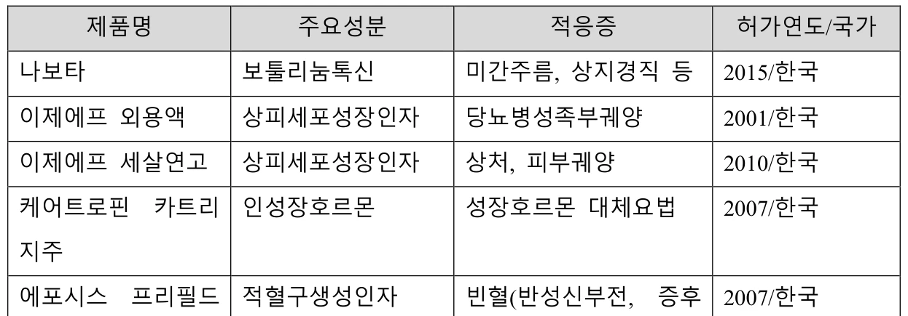
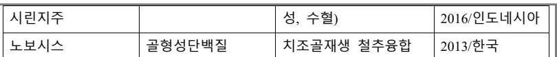
4.2 활동촉매제(Activation Triggers)
활동촉매제는 지식의 원천 및 경험과 잠재적 흡수역량을 연결해주는 매개체로 특정한 촉매제가 흡수역량을 발휘하는데 영향을 준다(Zahra and George, 2002). 활동촉매제는 성과 창출 실패와 같은 기업의 위기나 기업 전략의 재정의가 필요한 중요한 이벤트 등 내부적 요인이 될 수도 있고, 산업내 기술 전환, 지배 제품의 등장, 정부 정책의 변경 등 외부적 요인이 될 수도 있다.
대웅제약은 연혁이 오래된 제약사로, 현재와 마찬가지로 과거에도 국내 제약사 중에서는 영업력이 상위에 꼽히는 제약사 중 하나였다. 대웅제약은 창업 초기부터 오리지널 의약품을 수입하여 국내에 판매하는 사업모델을 유지하면서 글로벌 빅 파마와의 판매 협력을 통한 확장전략을 통해 성장하였다. 2011년 기준 상위 10개 품목의 매출의 70%가 글로벌 빅파마의 오리지널 의약품을 도입하여 발생하였을 정도로 해외 제약사의 의존도가 높았다.
[그림 13. 주요 제약사 상위 10개 품목 구성 비율 비교]
출처: 대웅제약 사업보고서
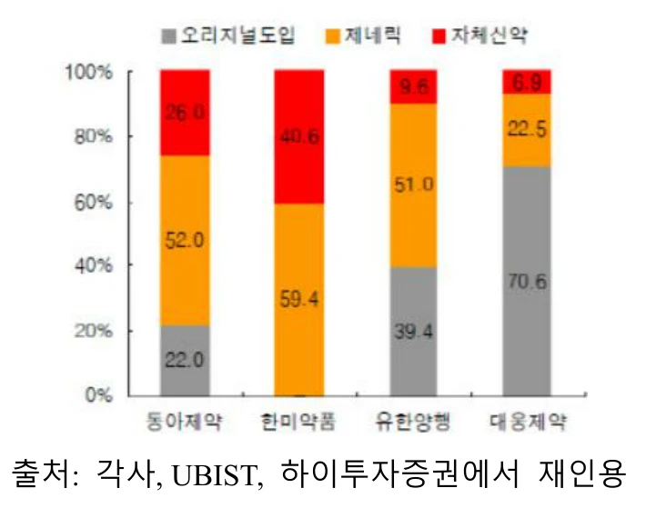
이러한 전략으로 외형을 확장하고 있던 대웅제약의 가장 큰 취약점은 다국적 제약사의 판매권 회수였다. 오리지널 의약품의 공동마케팅 또는 독점 판매 계약은 사실 국내 유통 및 영업력이 약한 글로벌 제약사가 일정의 수수료를 주고 국내 제약사와 협업하여 국내 시장에 진출하는 win-win 전략으로 볼 수 있는데, 당시에는 외국 제약사에서 판권을 회수하여 직접 판매하는 사례들이 종종 일어났다.
특히 오리지널 의약품을 수입/판매 비중이 컸던 대웅제약은 이러한 사례가 적지 않았다. 주력 제품이었던 일라이 릴리의 발기부전치료제 시알리스는 2006년, 노바티스의 고혈압 치료제 다이나써크는 2007년, 2016년에도 글리아티린과 자누비아(시타글립틴)군, 바이토린(에제티미브+심바스타틴) 등 3개의 품목의 판권을 반납하였는데 세 품목의 매출규모는 2,000억원 수준으로 전체 매출의 1/3을 차지할 정도였다.
앨러간은 2008년 대웅제약으로부터 아직 3년이나 남은 보톡스의 판권을 190억원의 위약금을 지급하면서까지 회수하고, 보톡스를 직접 판매하겠다고 발표했는데, 이 사건이 대웅제약의 활동촉매제로 작용하였다. 보톡스는 대웅제약에서 개발 판매 품목으로는 중요한 부분을 차지하고 있었던 제품이었다. 보톡스는 전자공시스템의 사업보고서상 별도 상품 매출로 잡혔던 품목으로, 단일 제품으로 180억원의 매출을 올리던 블록버스터 제품이었다. (당시에는 매출액이 100억원이 넘는 제품을 블록버스터라고 칭했다.) 보톡스 판권에 대한 회수는 대웅제약에게는 큰 위기로 다가왔으며, 자제 제품 개발을 진행하겠다는 전략적 판단을 하게 된 계기가 되었다. 대웅제약은 위약금으로 지급받은 190억원 중 120억원을 나보타를 개발하는데 투입하였다.
Zahra and George(2002)는 연구에서 활동촉매제의 강도가 높을수록 기업은 흡수역량을 구축하는데 많은 투자를 할 것이라고 주장했다. 이는 외부의 지식을 더 적극적으로 탐색하고, 흡수하고 활용하기 위해 조직 역량을 키우기 위함으로, 실제로 보톡스뿐 아니라 다른 제품의 판권 회수는 대웅제약의 자체 제품을 더 적극적으로 개발하는 동기를 부여하였으며, 이는 R&D 투자금액의 빠른 증가로 이어지게 되었다.
[표 9. 대웅제약 연구개발비/매출액 추이(2003년~2020년)]
출처: 정미애, 최윤희, 허은녕(2007)
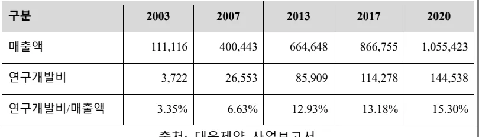
4.3 흡수역량
Cohen and Levinthal(1990) 연구에 따르면, 흡수역량을 확보하기 위해서 조직에 가장 필요한 역량은 사전 지식이며, 이는 사전 지식이 외부의 새로운 지식의 가치를 인식하고, 소화하고 상업화하기 위한 능력을 부여하기 때문이다. 그리고 흡수역량은 기업의 R&D 투자의 부산물이기 때문에 흡수역량이 R&D 투자와 연관이 있으며, 이를 측정하기 위한 지표로 연구개발집중도(연구개발비/매출액)로 제안하였다. 다른 연구들에서도 연구개발집중도를 흡수역량을 측정하기 위한 지표로 가장 많이 제안하였다.
[표 10. 흡수역량에 대한 연구]
출처: 각 사 사업보고서
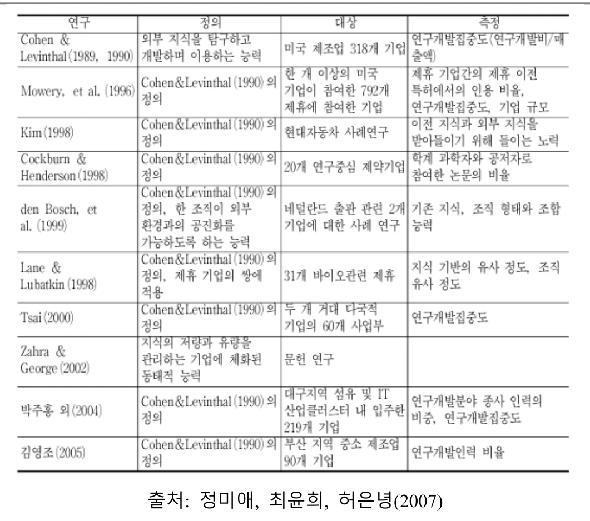
Zahra & George의 연구에서는 별도의 흡수역량을 측정하는 방법에 대해서 제시하고 있지는 않으며, 다른 연구에서도 흡수역량을 직접 측정하지는 않고, 연구개발집중도, 연구개발인력 비율, 연구개발 분야 종사 인력의 비중 등 간접적인 요소로 평가를 진행하였다 (정미애, 최윤희, 허은녕, 2007). 따라서 본 사례연구에서도 대웅제약의 흡수역량의 정도를 연구개발집중도(연구개발비/매출액)을 이용하여 평가해보고자 한다.
대웅제약은 1974년부터 부설 제약연구소를 설립하여 연구개발 활동을 시작하였다. 그리고 1983년에는 본격적인 의약품 개발에 집중하기 위해 중앙연구소를 설립하였다. 2000년대 초반까지 국산 배합 신약 종합소화제 '베아제정', 대웅항생제 곰실린 원료의 미국 FDA 승인, 국내 1호 바이오 신약이자 세계 최초로 이지에프를 이용한 신약인 '이지에프 외용액', 세계 2번째 코엔자임Q10 등 괄목할 만한 연구성과들을 거두었다.
하지만 대웅제약은 2001년 이지에프외용액 신약 출시 이후에는 신약 개발에서의 연구개발의 성과는 약 20년간 부재하였다. 대웅제약은 2011년부터 본격적으로 R&D에 투자하기 시작하면서 2010년 매출액 대비 R&D 투자액이 7.03%에서 2011년 11.72%로 급격히 상승하였다.
2000년대 후반 대웅제약이 앨러간의 보톡스 판권을 계약만료 이전임에도 불구하고 회수당했으며, 일라이 릴리도 시알리스의 판권을 회수하는 사태 등 오리지널 의약품을 수입하여 판매하는 공동마케팅을 활발히 진행하던 대웅제약에 미치는 충격이 컸다. 이러한 맥락에서 이익률이 높고 안정적인 매출 창출이 가능한 자사 제품의 개발에 대한 의지가 R&D 투자비율의 급격한 증가로 나타났다.
[그림 14. 국내 상위 전통제약사 R&D비용/매출액 추이]
출처: 각 사 사업보고서
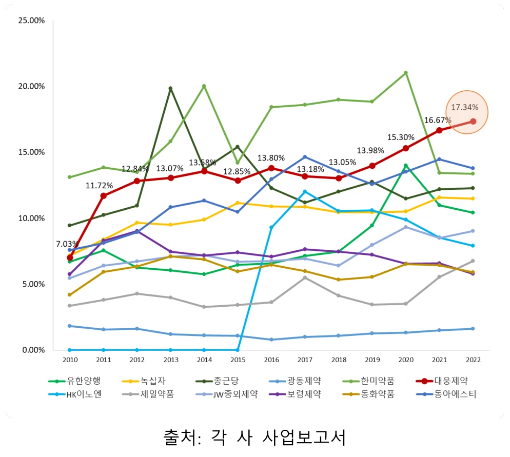
대웅제약은 2011년 이후에도 꾸준히 연구개발을 늘려 2022년말 기준으로는 연구개발집중도가 17.34%에 달해 국내 전통제약사 중에서 매출액 대비 가장 많은 R&D 투자를 하는 기업이 되었다. 연구개발비용으로는 2022년 기준 2,000억원 수준이며, 이 또한 동일한 기업군에서 R&D 투자금액이 가장 높았다. 정미애, 최윤희, 허은녕(2007)의 연구에서는 흡수역량을 측정할 때 인력규모에 의한 효과를 상쇄하기 위해서 1인당 평균 연구개발투자액을 산정하여 평가하였다.
[그림 15. 연구개발인력 1인당 연구개발투자액 추이(2018년~2022년)
출처: 각 사 사업보고서
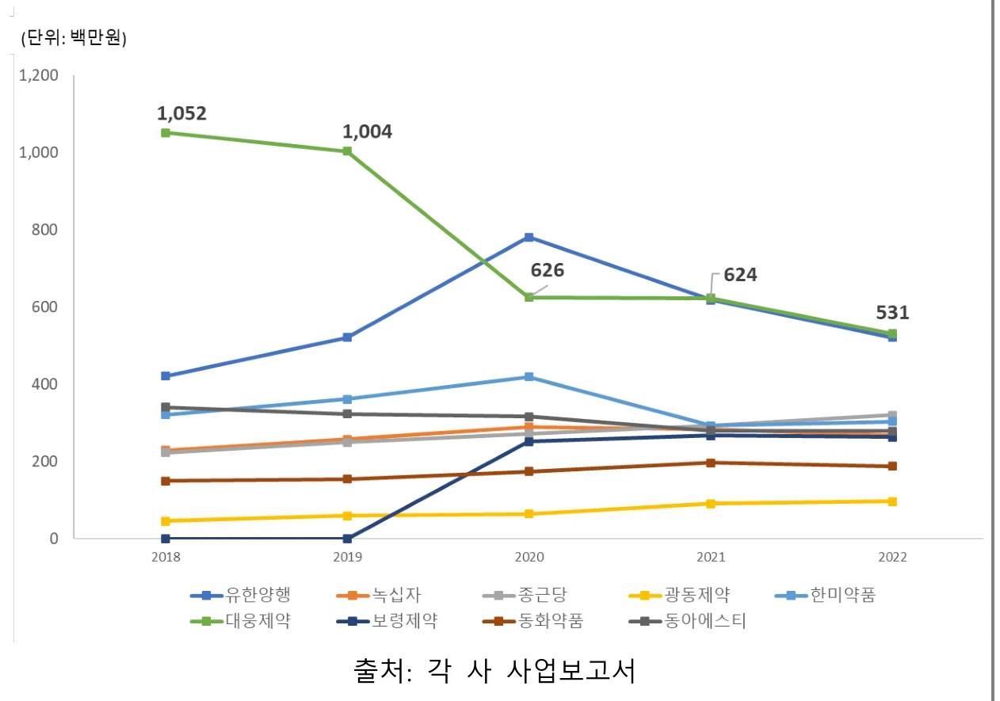
대웅제약은 2018~2019년에는 1인당 10억원 수준의 연구개발 비용으로 타사 대비 압도적인 1인당 연구개발투자액을 보였다. 이후 신약 파이프라인의 증가 및 프로젝트별 연구개발 조직 개편으로 인해 2018년~2019년 91명, 2021년~2022년 97명의 연구개발인력의 증가하였으며, 이에 1인당 R&D 투자금액이 현재는 5억원 수준으로 하락하였으며, 아직도 해당 지표의 1위를 유지하고 있다.
[표 11. 국내 상위 제약사별 연구개발 인력 및 R&D비용 CAGR]
출처: 각 사 사업보고서(2018)
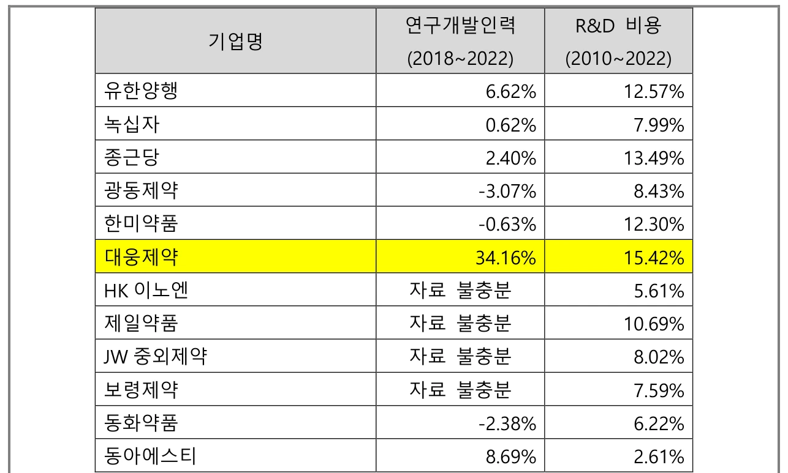
상기 표를 참고하면, 1인당 연구개발투자액이 급격히 하락하는 기간(2018년~2022년)동안 연구개발인력은 연평균 34.16%로 증가하고, R&D 비용은 15.42%가 증가하였음에도 불구하고 대웅제약이 1인당 R&D 비용 금액으로 1위를 유지하고 있는 것은 대웅제약이 타 기업 대비하여 R&D에 더 많은 투자를 함으로써 흡수역량을 지속적으로 확보하고 있다고 해석할 수 있다.
또한 이러한 대웅제약의 국내 제약사 중 가장 높은 R&D 투자 비중과 금액은 영업이익과 영업이익률을 낮추는 요소라고 볼 수 있으나, 2022년 역대 가장 높은 영업이익과 10% 가까운 영업이익율을 달성하고, 2021년, 2022년 연달아 신약 출시 및 글로벌 기술수출에 성공한 것은 높은 수준의 흡수역량을 보유하고 있는 것을 반증하고 있다.
4.4 사회통합 매커니즘
사회통합 매커니즘은 지식 공유와 지식활용을 용이하게 할 수 있게 하여, 잠재적 흡수역량이 실현적 흡수역량으로 전환될 수 있도록 매개체 역할을 한다. 사회통합 매커니즘이 제대로 작동되지 않으면 보유하고 있는 잠재적 흡수역량이 있어도 실현되지 못한다 (Zahra and George, 2002). 사회통합 매커니즘은 아이디어를 촉진하는 비공식적인 매커니즘과 기업 내에서 정보의 흐름을 원활하게 하여 효율적인 지식∙정보 공유와 활용을 촉진하는 공식적인 매커니즘으로 나뉜다. 공식적인 매커니즘은 조직의 구조에 영향을 받으며, 일부 조직 구조가 직원 상호작용을 증진하여 문제 해결을 촉진한다(Sheremata, 2000). Sheremata(2000)은 "정보네트워크의 중심에 있고, 필요한 전문지식에 접근할 수 있으며, 중요한 희소 자원을 통제하고, 공식적인 권한을 가지고 있는 다기능팀(Cross-functional team)은 문제해결을 빠르게 하고, 문제해결 과정에서 자원의 지출은 줄이고, 딜레마적 의사결정의 퀄리티를 향상시킨다"고 주장하였다.
대웅제약은 국내 제약사에서는 유일하게 프로젝트 기반의 연구조직을 운영하고 있는 제약사이다. 대부분 기존의 신약 R&D 조직은 기능별로, 물질 발굴 및 제조, 분석, 평가, 임상개발 등으로 구분되어져 있는 것과는 대비되는 조직 구조이다.
2018년 금융감독원은 각 제약사에게 연구개발 조직의 구성 및 역할에 대해 자세한 설명을 주문하였다.[9] 일부 제약사를 제외하고 대표적인 제약사인 녹십자, 유한양행, 종근당, 대웅제약, 한미약품, 동아에스티, 한미약품, 셀트리온, 보령제약 등이 연구 조직에 대한 자세한 설명 등을 사업보고서에 추가하였다. 이 중 대웅제약만이 프로젝트별로 별도 팀이 꾸려져 있는 것을 확인할 수 있다.
종근당 연구소 조직 구성
한미약품 연구소 조직 구성 대웅제약 연구소 조직 구성
[그림 16. 종근당/유한양행/대웅제약 연구소 조직 구성 비교교]
출처: 대웅제약 사업보고서(2022)
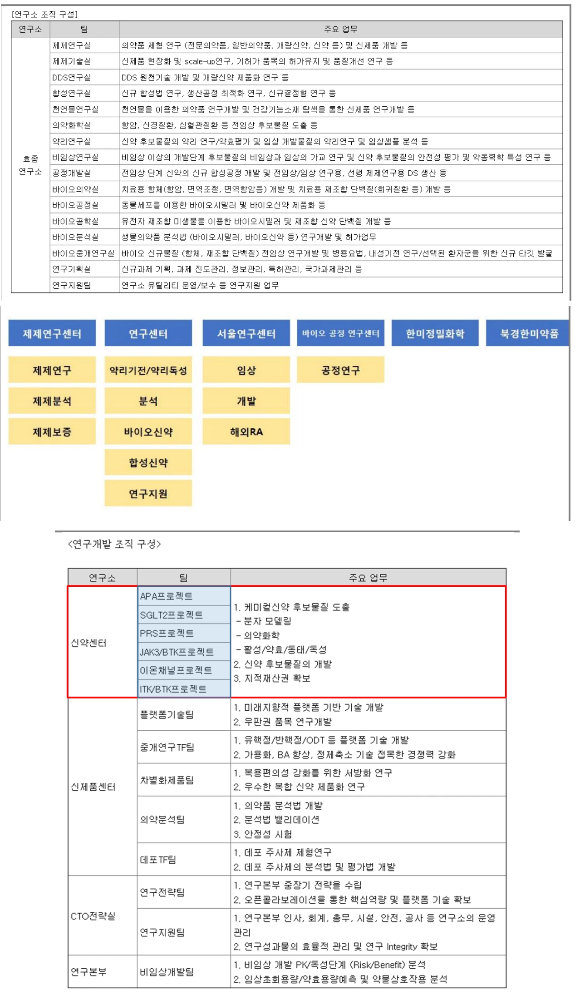
이러한 조직의 기원은 대웅제약의 나보타 개발부터 시작이 되었는데 나보타의 국내 허가 및 미국 임상 3상시험 이후 글로벌 시장 진출을 위해 나보타 사업본부를 설치하였다. 나보타 본부는 오직 나보타를 위한 연구팀, 개발(인허가)팀, 생산팀으로 구성이 되어있으며, 개발 프로세스의 효율성을 극대화하기 위해 설치되었다. 이렇게 대웅제약이 전담 본부를 설치하여 프로젝트를 추진할 수 있었던 것은 글로벌 시장에서 보툴리눔 톡신의 시장성이 충분하다고 판단하였으며, 미국에서 품목허가를 받기 위해서는 필수적으로 cGMP 시설을 구축하고 허가를 받아야 했기 때문이다.
대웅제약은 나보타의 글로벌 Licensee인 에볼루스(Evolus)와 계약할 때부터 80개국 진출을 목표로 하고 있었다. 글로벌 미용 및 성형 시장이 연간 10%씩 빠르게 성장함에 있어 나보타가 성공하기 위해서는 미국에서의 품목허가는 굉장히 중요한 요소였다. 미국에서 품목허가를 받는 것은 확률이 매우 낮은데, 이는 미국 규제기관인 FDA의 안정성, 유효성, 품질에 대한 심사가 굉장히 까다롭기 때문이다. 또한 미국에서 판매되는 의약품은 cGMP에서 제조되어야 하는데, 대웅제약은 제품 수출을 염두에 뒀음으로 cGMP 기준에 맞는 제조시설을 구축하고 심사에 통과해야 하는 이슈가 있었다. 국내에서 완제의약품으로 cGMP 인증을 받은 회사는 삼성바이오로직스, 셀트리온, LG 화학, 한미약품 등 대형 제약사 중에서도 일부만 승인을 받았을 만큼 심사 과정 자체가 복잡하고 까다롭다.
이러한 난제들을 효과적이고 빠르게 해결할 수 있도록 하기 위해 대웅제약은 나보타 전담 본부를 설치하였다. 나보타 본부의 구체적인 조직도는 공개된 바 없지만 언론 보도자료나 기사, 그리고 인터뷰를 통해 본부 내에 각 기능을 담당하는 팀이 구성되어있음을 확인할 수 있었다. 이러한 프로젝트 단위의 나보타 본부는 다기능팀 종류 중 타이거 팀이라고도 불리는 자율적 팀(Autonomous Team) 구조와 가깝다.
[그림 17. 나보타 전담본부 조직도]
출처: 대웅제약 뉴스룸
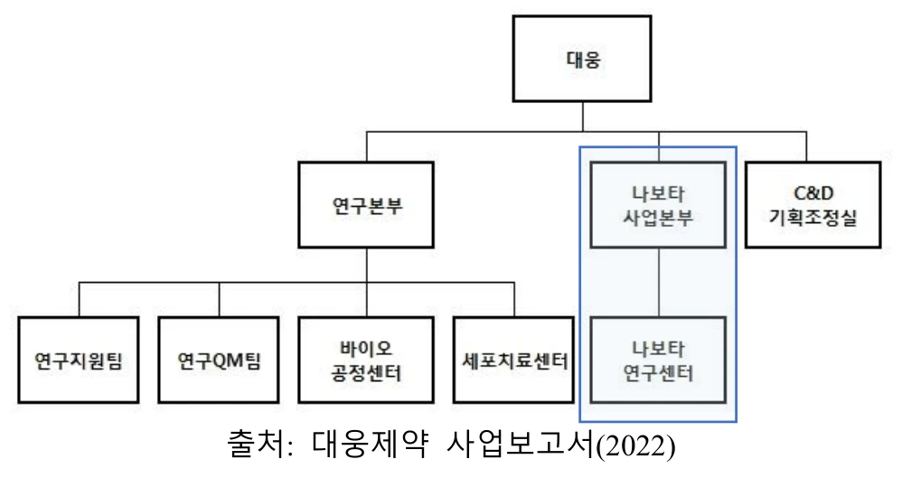
나보타 본부는 우선 중량급 팀 등 다른 다기능 팀과는 다르게 기존의 기능 부서에서 파견이나 배정을 통해 소속되는 것이 아니라 나보타 본부에 영속적으로 배치되어 신제품(나보타) 개발 관련된 업무만 담당하게 되며, 보상도 프로젝트의 성공여부에 기반한다. 따라서 내부에서 일어나는 모든 정보와 커뮤니케이션의 내용은 나보타에 관련된 것으로, 조직 내에서 동일한 맥락과 사전 지식 기반아래 원활하게 공유될 수 있었다. 또한 조직 내에 각 기능의 전문가들로 구성되어 다양한 지식을 가진 기능별 전문가들이 나보타 개발이라는 목표 아래 서로 협력하고 소통하여 실현적 흡수능력의 증가를 가지고 올 수 있는 구조였다.
중량급 팀에서는 프로젝트 팀에 배정되었더라도 기존 기능 조직의 관리자에게 평가나 영향력을 받는 것과 대비하여, 나보타 본부는 본부장 급의 프로젝트 관리자가 배치되어 팀에 필요한 인력이나 자원, 본부내 팀원들에 대한 인사권, 평가 등 전적인 통제 권한 및 일원화된 의사결정체계를 갖고 있다.
Clark and Fujimoto(1987)에 따르면 이러한 조직 구조가 제품 개발 속도와 연관성이 높은 문제 해결 주기를 줄여줄 수 있다고 주장하였으며, 실제로 전체적인 나보타의 개발 일정은 타 기업의 신약개발 기간 대비하여 빠르게 진행된 것을 확인할 수 있다. 나보타 본부가 설치된 2018년 5월, 미국 FDA는 품목허가를 위한 실사 과정에서 CMC3를 보완하여 다시 제출하라고 한 바 있으며, 본 이슈에 대해서 3개월이라는 짧은 시간안에 대응하면서 2018년 8월에 자료를 제출하여 품목허가를 획득하였다. 이는 타 기업 대비하여 빠른 문제해결의 사례로 한미약품의 FDA 승인을 받은 바이오 의약품 신약 '롤론티스'도 2번의 보완만에 품목허가에 성공하였으며, 휴젤의 보툴리눔 톡신 제제인 '레티보'는 FDA 보완을 2번의 보완요청을 받아 현재 세번째 자료 보완을 준비하고 있다. 참고로 롤론티스는 품목허가 신청 후 4년만에 품목허가를 받은 것에 비해, 대웅제약의 나보타는 1년 9개월만에 미국 허가를 득하였다.
나보타 본부를 통해 나보타의 개발 기간 단축 및 사업화가 성공을 거두면서, 대웅제약은 신약센터도 프로젝트별로 개편하고 각 팀별로 연구개발을 전담할 수 있는 '익스트림 팀'을 만들었다. 운영방식은 신약센터 > 질환별 팀(질환별 수개의 프로젝트 수행) > 1개의 Squad(그림 18의 세로 묶음으로 표기)가 1개의 프로젝트를 담당하는 구조로, 각 Squad별 필요한 모든 기능들을 배정하고 의사결정 등을 자발적으로 할 수 있으며, 한 연구원이 한 프로젝트에만 집중할 수 있는 조직 구조이다.
[그림 18. 대웅제약의 신약센터의 익스트림팀]
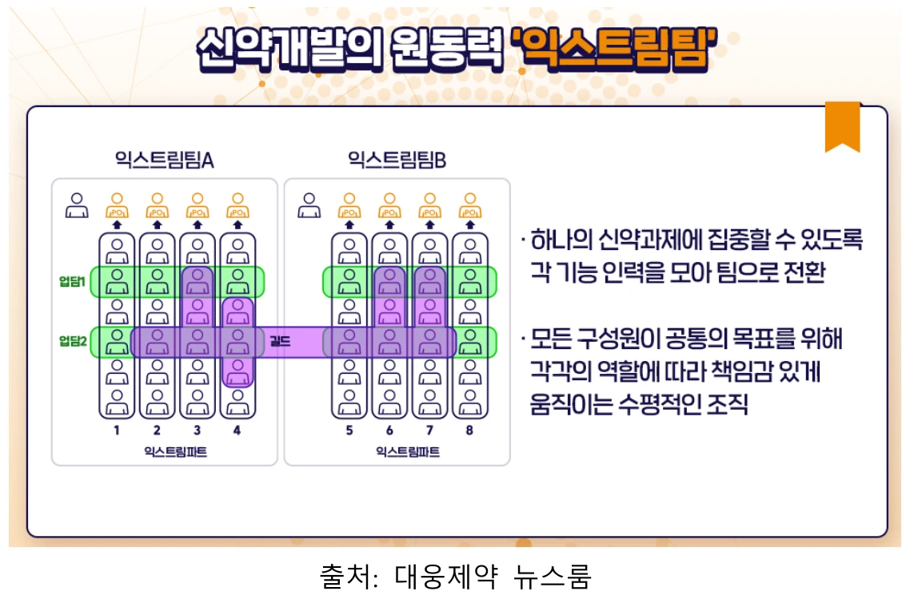
또한 각 Squad의 ‘기능별로’ 소통하고 학습할 수 있게 하기 위해 업담(업무잡담, 그림 18의 초록색으로 표기)이라는 제도를 만들어서 서로 소통하고 학습할 수 있도록 조직하였다. 이러한 신약센터의 개편은 대웅제약 스스로도 대웅제약의 신약 개발의 역사는 익스트림팀 전과 후로 나뉜다고 홍보할 정도로 현재는 유의미한 성과들을 내고 있다. 또한 익스트림팀은 연구생산성에도 큰 영향을 미쳤는데 국내 상위제약사의 신약 조직과 비교할 때 신약개발 생산성(연구원수 대비 개발단계 신약과제 수)가 가장 높은 것으로 파악된다.
4.5 전유성 체계
전유성(appropriability) 체계는 지속적인 경쟁우위에 영향을 미칠 수 있는 핵심 요인으로, 연구개발 활동 결과물의 잠재적 이익을 최대한 확보하기 위하여 경쟁기업의 모방이나 추격으로부터 보호할 수 있는 전략적 수단이다. 전유성 체계는 특허, 비밀유지, 리드타임, 설계의 복잡화 등의 전략으로 구성 되어있다 (서한결, 정양헌, 2016). 기업들은 전유성 체계를 강화하여 잠재적 이익의 불확실성을 낮추고자 끊임없이 노력한다. 대웅제약이 나보타를 개발하면서 확보한 전유성 체계를 1) 특허, 2) 리드타임으로 구분하였다.
4.5.1 특허: 하이-퓨어 테크놀로지(등록 특허 KR1339349) 및 생산기술
하이-퓨어(Hi-pure) 테크놀로지는 보툴리눔 톡신을 고순도로 정제할 수 있는 정제 공법으로 나보타 제조의 핵심 기술이다. 2013년 국내 등록을 시작으로 보툴리눔 톡신의 주요 시장인 미국, 유럽, 중국, 브라질 등에서 특허를 등록하였다.
보툴리눔 톡신의 순도는 안전성의 중요한 요소로 불순물이 많고, 단백질이 적은 경우에는 시술 후 정확한 확산이 어려워 불필요한 부작용을 유발할 수가 있다. 좋은 정제 기술은 불순 단백질을 정밀하게 걸러내고 유효성분의 함량을 높일 수 있다. 보툴리눔 톡신은 최소한 90%이상 순도가 나와야 하며, 95%는 보통, 가장 좋게는 98%이상의 순도가 나와야 한다. 대웅제약은 하이-퓨어 테크놀로지를 이용하여 98%이상의 고순도를 구현하였으며, 이를 특허화 하여 보툴리눔 톡신의 핵심 제조 기술인 정제 기술을 전유성으로 확보할 수 있었다.
대웅제약은 정제기술 뿐 아니라 정제 이후 건조 단계에서의 기존 보툴리눔 톡신 제제 제조사와 차별화를 꾀했다. 현재 대웅제약이 사용하고 있는 건조방식은 감압건조 방식으로 앨러간과 대웅제약만 감압건조 방식을 채택하고 있다.
[표 12. 보툴리눔 톡신 제제 건조 공정별 특징 비교]
출처: 대웅제약 사업보고서(2022)
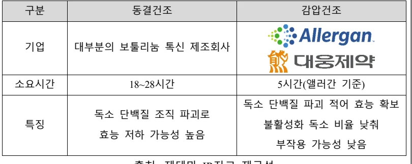
동결건조 방식은 이미 30년이 넘은 기술이지만 제조 과정에서 활성이 없은 불활화 단백질이 생길 수 있으며, 이럴 경우 같은 유닛의 제품이더라도 주입해야하는 용량이 늘고, 이 과정에서 불활성 단백질로 인한 항체가 더 많이 생길 수 있어 내성이 생길 가능성이 높다. 감압건조 방식은 불활성 단백질의 양을 극소화할 수 있어서 효능과 내성 등 안전성에 있어서 동결건조 대비 우위를 가지는 기술이다.
4.5.2 리드 타임
리드 타임이란 제품화하기까지의 소요시간을 뜻하며, 전유 장치로써 짧은 리드타임은 시장에서 시장을 선점할 수 있는 기회 확보를 위한 중요한 수단이다 (이승준, 박성택, 김영기 2010).
국내 보툴리눔 톡신 제제 개발사는 16개 회사이지만, 이 중 FDA 허가를 취득하고 cGMP 인증을 받은 기업은 대웅제약 뿐이 없다. 2021년까지 국내 1위였던 메디톡스의 경우에도 지속적으로 미국 진출을 시도하고 있지만 애브비(Abbvie, 앨러간을 2022년에 인수)와의 임상3상 후 라이선스 계약 취소로 인해 개발이 연기되어 2023년 상반기에 FDA 허가 신청을 계획하고 있다. 다만, 현재 메디톡스의 주요 제품인 메디톡신, 이노톡스, 코어톡스 등 모든 제품이 국내 식약처가 허가를 취소하고 있는 만큼 미국에서의 FDA 허가 가능성에 대한 우려가 있으며, cGMP 인증 등 절대적으로 시간이 소요되는 절차들이 남아 있기 때문에 선진국 시장 진출의 불확실성이 존재한다. 또한 대웅제약은 경쟁사가 허가를 준비하는 동안 지속적인 나보타 생산으로 인한 바이오 의약품 생산 노하우 확보 및 공정 업그레이드를 통한 제품력 향상 등을 위한 시간 확보가 가능하며, 본격적인 글로벌 공급 대응을 위한 나보타 3공장의 착공[10]을 앞두고 있어 타 경쟁사와의 격차는 더욱이 벌어질 것으로 예상된다.
이러한 경쟁사 대비 시장 진출이 빠른 리드타임으로 대웅제약은 또 다른 전유 장치로 작용이 가능한 의료진의 제품 시술 경험 및 임상 데이터를 확보할 수 있다. 현재 나보타는 에볼루스를 통해 보툴리눔 톡신 제제 시장의 KOL를 중심으로 판매량이 증가하고 있다. 에볼루스는 보톡스의 원개발사인 앨러간 출신의 CEO 및 경영진과 성형외과∙피부과 의사들이 주주로 들어와 있는 바이오 벤처 기업이다. 의약품은 사용 사례가 중요한 제품으로 신규 제품의 제품력도 중요하지만 임상에서 획득한 데이터뿐 아니라 KOL의 의견 및 사용례가 처방에 주요한 영향을 미친다. 미국 시장에서 나보타의 KOL 중심의 시술 사례 축적은 제품의 안전성과 효능에 대한 신뢰성으로 연결되기 때문에, 이는 후발 주자에 대한 대웅제약의 전유성 체계를 강화시키고 지속시킬 수 있는 요인이다.
5 대웅제약의 개방형 혁신
대웅제약은 국내 제약사 중에서 개방형 혁신을 가장 활발히 하고 있는 제약사이다. 대웅제약의 개방형 혁신 프로그램의 이름은 '오픈콜라보레이션'으로 국내외 대학, 정부출연 기관, 병원, 벤처 등 협력이 가능한 모든 전문가들과 적극적으로 연구개발 및 사업화를 진행하고 있다. 이는 의약품 개발의 성공 가능성을 높이고, 효과적이고 효율적인 사업화를 위한 전략으로, 대웅제약은 2013년부터 본격적으로 개방형 혁신 프로그램을 운영하여 다양한 공동개발, 기술도입, 합자회사 설립 등을 추진해왔다.
대웅제약은 2013년 에볼루스와 라이선스 계약을 체결하였으며, 에볼루스가 미국을 포함한 60개국에서의 나보타 임상개발, 허가 및 사업화를 진행한다. 라이선스 이전 계약 규모만 3,000억원 규모였다.
[그림 19. 에볼루스와의 나보타 기술이전 계약 구조]
출처: 미 SEC, Evolus Annual Report(2017)
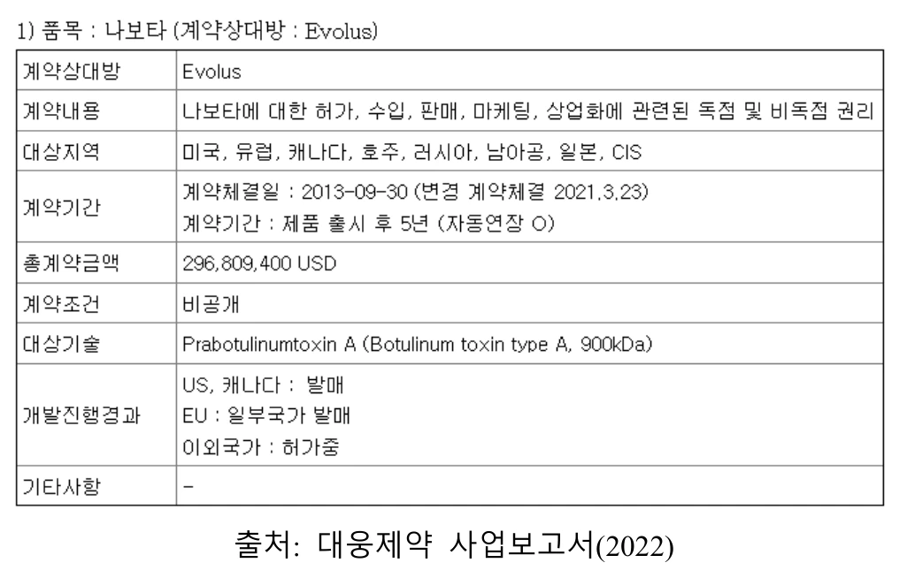
5.1 글로벌 시장에서 신규 매출 창출
대웅제약은 국내 시장 이외의 신규 시장에서의 매출 창출을 창출하고 혁신 비용을 줄이기 위해 해당 시장에서 전문성을 보유한 바이오 벤처에 나보타를 기술 이전하였다. 개방형 혁신은 생산이나 마케팅 과정에서의 협력은 개방형 혁신에 포함되지 않고 기술 혁신 과정에서 발생하는 협력을 의미한다 (김석관, 2008). 이런 관점에서 대웅제약의 나보타는 국내에서는 허가를 받았으나, 미국시장 진출을 위한 임상시험 단계를 다시 진행해야 하기 때문에 나보타의 기술이전을 개방형 혁신으로 정의할 수 있다. 대웅제약의 개방형 혁신은 외향형 개방형 혁신에 속한다. 대웅제약의 개방형 혁신이 특이한 점은 대형사로의 기술이전이 아닌 벤처기업이지만 해당 분야 전문성을 보유한 파트너사와의 협력으로 시장에서 사업화 성공 가능성을 높인 것이며, 이는 나보타의 개방형 혁신의 주요한 성공 요인이자 전략이 되었다고 할 수 있다.
대웅제약은 국내 제약사 중에서 가장 많은 해외법인과 지사를 운영하고 있다. 미국, 중국, 일본, 베트남, 인도, 인도네시아 등 전 세계 8개 국가에서 5개의 R&D센터를 두고 있으며, 현지 기업과의 합작법인 등으로 현지 제조소 및 연구소 등을 운영하는 등 적극적으로 해외 진출을 진행하고 있다. 그럼에도 불구하고 대웅제약이 파트너를 통한 글로벌 사업화를 별도로 추진한 이유는 주요 시장인 미국 및 유럽 등에서 허가 및 공급, 판매 역량을 갖추고 있지 못했기 때문이다. 대웅제약이 에볼루스를 글로벌 사업화의 파트너사로 협업을 결정한 것은 에볼루스가 가지고 있는 미국내 허가, 사업전략, 마케팅 역량 때문이었다.
에볼루스는 2013년 나보타를 기술도입하기 1년 전인 2012년에 창업한 소규모 신생회사로, 현재까지도 판매 제품은 나보타가 유일하다. 하지만 에볼루스는 앨러간 출신의 보톡스 전문가 및 미국의 피부과∙성형외과 의사들이 공동설립한 회사로, 보툴리눔 톡신 제제에 대해 매우 전문적인 지식과 역량을 지닌 회사이다. 앨러간에서 보톡스 FDA 허가를 담당했던 전문가들이 에볼루스에 재직 중이며, 에볼루스의 CEO 및 CMO(마케팅)도 앨러간 출신이다. 뿐만 아니라 에볼루스는 2014년에 스트라스피 크라운(Strathspey Crown)의 자회사인 알페온
명의 출자를 받아 세워진 조합 형태의 회사로, 이러한 기반은 미국 출시 이후 주요 KOL 네트워크를 통한 나보타의 빠른 사업화가 가능했던 요소이다. 대웅제약은 제품 개발 및 생산의 역량을 최대한 활용하여 빠른 제품개발 및 생산 공정을 확립하였으며, 에볼루스의 미국/유럽 허가와 마케팅 및 유통 역량을 통해 글로벌 사업화에 성공할 수 있었다.
또한 대웅제약은 치료용 보툴리눔 톡신 제제의 글로벌 사업화를 위해서 동일한 전략의 개방형 혁신을 진행하였는데, 2019년 이온바이오파마(AEON Biopharma)와 파트너십 계약을 체결한 것이다. 이온바이오파마는 2019년 미국, 유럽, 호주, 캐나다, 러시아, 남아프리카 등에서 치료용 목적의 보툴리눔 톡신 제제를 허가, 수입, 판매하는 기술이전 계약을 체결하였다. 이온바이오파마도 에볼루스와 유사하게 앨러간에서 치료 분야의 보톡스 사업화를 담당하던 CEO를 선임하여 사업화를 추진하고 있다.
대웅제약은 나보타의 사례처럼 해당 분야의 확고한 전문성을 보유한 개발사를 파트너사로 선택하는 전략을 자사 신약 파이프라인 사업화에도 도입하였다. 국내에서 최근에 허가를 받은 위식도역류질환 신약인 '펙수프라잔'의 글로벌 사업화를 위해 뉴로가스트릭스(Neurogastrx)라는 바이오 벤처와 기술료 4억 3천만 달러와 로열티, 그리고 지분을 대가로 라이선스 계약을 체결하였다. 뉴로가스트릭스도 에볼루스와 유사하게 미국내 소화기질환 치료제 전문 개발사로 빅파마 출신의 경영진과 연구진들이 나와 설립한 회사이며, 펙수프라잔의 미국, 캐나다의 임상 및 허가, 판매를 담당하게 된다.
대웅제약은 적극적이고 차별화된 개방형 혁신 전략으로 현재 글로벌 시장에서 나보타를 통해 1,099억원의 부가적인 매출액(2022년)을 발생시키고 있다. 이는 2022년 나보타의 국내 매출(2022년)과 비교했을 때는 4배의 부가수익으로 볼 수 있다.
5.2 파트너사의 임상개발로 혁신 비용의 절감
대웅제약은 개방형 혁신 전략을 통해 글로벌 사업화를 통한 부가 매출을 창출하였을 뿐 아니라 대규모 임상개발 비용을 절감하면서 혁신비용을 감소시켰다.
보툴리눔 톡신 제제는 바이오시밀러로 개발이 어렵고, 주로 신약으로 개발이 된다. 따라서 적응증 외삽이 불가능하고, 적응증 별로 임상시험을 진행하고 허가를 받아야 하기 때문에 기본적으로 개발 비용이 많이 들어가는 구조이다.
미국은 높은 임상개발 비용으로 잘 알려져 있는데, Dermatology 분야의 임상 2상은 약 140억원, 임상3상은 약 180억원 정도로 추정4되며 임상 1상부터 허가 및 임상 4상까지는 780억원 정도 투자된다. 이는 나보타의 국내 허가까지의 개발 비용이 120억원 정도 지출된 것과 비교하면 매우 높은 금액이다. 실제 나보타의 미국 임상비용을 가늠할 수 있는 에볼루스의 10-K Aunnual Report를 보면 Research and Development 비용이 2015년부터 임상3상이 마치는 2017년까지 약 519억원의 비용이 투자된 것을 확인할 수 있다.
[그림 20. 에볼루스의 R&D 투자금액(2015년~2017년)]
출처: 대웅제약 IR Book(2022)
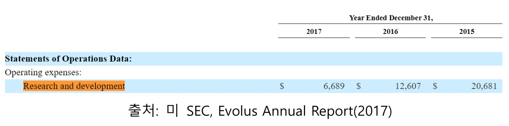
대웅제약은 에볼루스와의 개방형 혁신을 통해 약 780억원 규모의 잠재적 미국 임상 및 허가 비용을 줄일 수 있었으며, 이를 통해 나보타를 통한 이익 창출을 극대화할 수 있었다.
6 나보타 성공을 통한 경쟁우위
흡수역량을 통해 전략적 유연성(Strategic Flexibility), 혁신(Innovation) 및 성과(Performance)를 창출 할 수 있으며, 이 3가지 요소는 동적 시장에서 기업이 지속가능한 경쟁우위를 만들어 내는 가장 중요한 요소이다 (Zahra and George, 2002; Barney, 1991; Liebeskind, 1996). 대웅제약은 나보타의 성공적인 개발 및 사업화를 통해 다음과 같은 지속가능한 경쟁우위를 창출하였다.
6.1 전략적 유연성
전략적 유연성은 외부 환경의 변화를 감지하고, 적시에 빠르게 적절한 조치를 위하기 위해 자원을 투입할 수 있는 조직의 능력이다. (Shimizu and Hitt, 2004) 전략적 유연성이 중요한 이유는 동적 시장에서 시시각각 바뀌는 외부 환경의 변화에 고정적인 전략을 유지하는 것이 아니라 기존의 전략적 목표를 달성하기 위해 전략을 변경하며 유연하게 대처할 수 있기 때문이다.
대웅제약은 글로벌 시장에 신속하게 진출하고, 특히 아직 시장 기회가 충분한 치료용 보툴리눔 톡신 제제에서의 시장 점유율을 높이기 위해서 나보타 전담 본부를 신설하는 전략적 유연성을 보여주었다. 기존의 제약사에서는 한 개의 제품으로 전담 본부를 설치하는 사례가 없었으나 대웅제약은 미국 시장 진출을 빠르게 진행하고, 치료용 보툴리눔 톡신 제제의 시장 기회를 확보하기 위해 전략적으로 나보타 본부를 설치하고 자원을 배분하였을 뿐 아니라 의사결정 라인을 단일화하여 자원의 유연성 및 조직의 유연성을 보여주었다. 대웅제약은 나보타 사례의 경험을 기반으로 신약개발센터의 조직 운영 체계도 프로젝트 단위로 개편하면서 전략적 유연성을 강화하게 되는 계기가 되었다.
6.2 혁신
대웅제약의 나보타 사례는 대웅제약의 신약 개발의 혁신성에도 큰 영향을 미쳤다. 특히 신제품 개발에 주요한 영향을 미치는 개발 기간을 단축시키는데 혁신역량을 확보하였다. 신약개발 소요시간은 신약의 개발 비용과 시판 이후의 독점판매기간에 영향을 미치기 때문에 신약 개발의 수익성에 직결되는 지표이나, 신약 개발 과정은 표준화 되어있어 혁신의 요소가 적고 차별적 경쟁력을 갖추기 어려운 것이 사실이다(김석관, 2004). 그에 비해 대웅제약은 나보타의 경우 프로젝트 시작부터 허가까지 5년, 펙수클루정은 특허 출원 후 5.91년이 걸렸다. 국내 개발 신약의 경우 특허 출원일로부터 품목허가까지 10.3년(중간값, 평균 9.9년)이 걸리는(조정연, 이상원, 2020) 반면, 대웅제약은 이에 비해 신약 개발 속도가 40~60% 수준이다. 대웅제약은 타사 대비 빠른 개발 속도로 신약의 가치를 극대화할 수 있었으며, 나보타의 경우에도 메디톡스나 휴젤을 제치고 아시아 첫 FDA의 허가를 받으면서 미국 시장에서 빠르게 성과를 낼 수 있었다.
6.3 성과
나보타는 글로벌 성과를 기반으로 2022년 매출이 1,421억원을 달성하면서 대웅제약의 간판 제품인 우루사의 매출액을 넘었다. 이는 2022년 대웅제약 온기 매출액 12.2%를 차지하는 수준이며, 단일제품으로는 대웅제약의 매출 1위 상품이 되어 대웅제약의 전체 성과의 주요한 축을 담당하게 되었다.
[그림 21. 나보타 연간 매출(2020~2023) 및 분기별 수출 추이(2021~2023)]
출처: 식품의약품안전처, 데일리팜에서 재인용
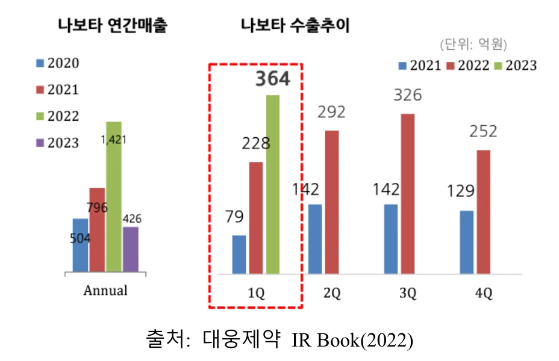
나보타는 글로벌에서 보툴리눔 톡신 제제의 경쟁이 심한 국내 시장에서도 2022년 메디톡스을 제치고 국내사 중 가장 많은 보툴리눔 톡신을 생산하는 기업으로 등극하였다. 메디톡스의 허위 서류 조작 및 국가출하허가 없이 판매한 약사법 위반 등으로 허가취소 행정처분 및 신뢰성 저하로 인해 시장에서 불리해진 상황을 나보타가 보톡스와 동일한 효능과 안전성 등의 경쟁력을 기반으로 빠르게 점유율을 확보한 것이다.
[그림 22. 국내 보툴리눔 톡신 제제 업체별 생산실적 (단위: 억원)]
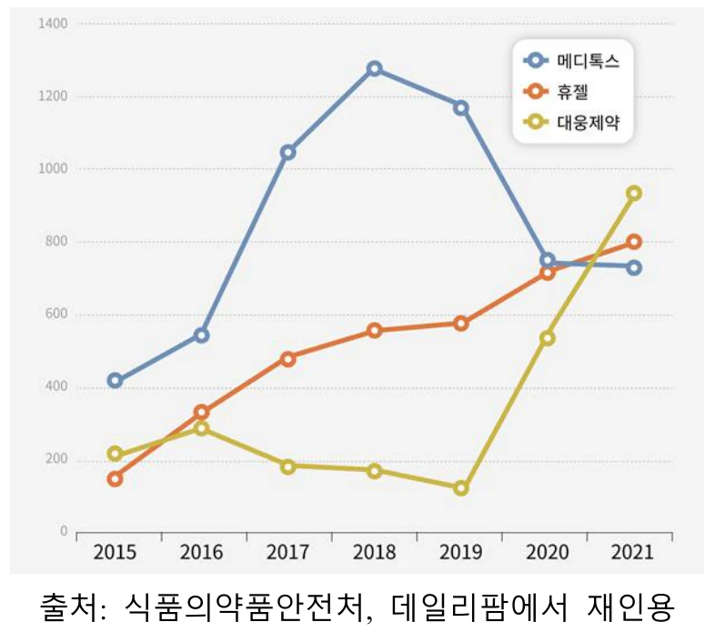
이러한 대웅제약 전체 실적에도 영향을 미쳤는데, 대웅제약의 경우 2022년 사상 최대의 매출액 및 영업이익을 달성하였다. 또한 대웅제약은 나보타 외에도 2021년, 2022년에 2가지 신약의 품목허가 및 출시 성과를 달성하고, 글로벌 기술이전에도 성공하면서 실현적 흡수역량을 통한 지속적인 성과를 보여주고 있다.
제 3 장 결론
1 시사점
지금까지 흡수역량과 개방형 혁신 관점에서 나보타의 글로벌 사업화 성공 사례를 분석하였으며, 시사점은 아래와 같다.
Cohen and Levinthal(1990)에 따르면, 흡수역량에서 가장 중요한 요소는 사전 지식과 노력의 양이다. 다만, 모든 제약사가 사전 지식이 있다고 해서 성과를 내는 것이 아니라, 높은 수준의 잠재적, 실현적 흡수역량을 보유하고 있어야 지속가능한 경쟁우위를 창출할 수 있기 때문에 조직의 흡수역량 증진을 위한 R&D 투자는 꾸준히 진행되어야 한다. 대웅제약은 보톡스 수입/판매를 통한 사전 지식과 경험을 기반으로 시장에서 원하는 제품의 니즈를 정확히 파악하였으며, 기존에 보유하고 있던 바이오 의약품에 대한 개발/생산과 관련된 사전 지식과 경험도 보유하고 있었다. 이와 함께 상위 제약사들 중에서도 높은 수준의 R&D 투자금액을 통해 획득된 흡수역량을 통해 우수한 제품 개발에 성공할 수 있었다.
또한 조직 내에서 소통과 지식의 흐름을 원활하게 하고, 프로젝트에 집중할 수 있는 조직 구조를 찾는 지속적인 노력과 시도가 이루어져야 한다. 사회통합 매커니즘은 잠재적 흡수역량을 실현적 흡수역량으로 전환되는 수준을 높여 신약개발의 시간적, 비용적 효율성을 달성할 수 있게 해준다. 신약개발 회사에서 다기능 팀 개념을 도입하여 프로젝트별 전담조직을 만드는 일은 매우 이례적이고 어려운 일이며 경영진을 포함한 해당 임직원의 결단과 노력이 필요하다. 이에 성공한 대웅제약은 현재 자율적 팀 구조의 신약센터를 통해 나보타 뿐 아니라 신약 개발의 지속적인 성과가 나타나고 있다.
마지막으로 협력 파트너사의 역량과 자사의 역량, 그리고 내부에 필요한 역량에 대한 객관적 판단을 기반으로 한 개방형 혁신은 글로벌 사업화의 가능성을 높일 수 있다. 대웅제약은 자체 내부 역량과 외부에서 필요한 역량들에 대한 정확한 평가를 통해 기업의 규모와 상관없이 해당 분야 전문성이 풍부한 파트너와 협력하는 개방형 혁신을 통해 보툴리눔 톡신 최대 시장인 미국 시장에서 빠른 성과 창출이 가능하였다.
2 한계점
대웅제약 내부 정보 접근의 한계로 조직내 어떠한 활동들이 흡수역량의 잠재적흡수역량(습득 및 동화) 및 실현적 흡수역량(변환 및 활용)에 영향을 미쳤는지에 대한 분석을 진행하기에 한계가 있었다. 향후 연구에서는 본 사례 연구에서 발견한 흡수역량 요소들의 기반이 되는 조직내 활동이나 조직의 지식관리에 대한 연구를 진행하여 지속적으로 경쟁우위를 창출하고 유지시키기 위한 기업내 흡수역량에 대한 보다 다차원적인 연구가 진행이 되어야 할 것이다.
또한 본 사례 연구에서는 균주 논란에 대한 분쟁은 다루지 않았다. 이는 대웅제약과 메디톡스의 소송이 아직 진행 중으로, 결론이 나지 않은 사안을 사례연구 분석에 포함하는 것이 무리가 있다고 판단하였다. 따라서 본 연구는 균주 출처에 대한 논의는 다루고 있지 않으며, 균주의 분리동정, 임상 개발 및 생산, 마케팅에 초점이 맞춰져 분석이 진행이 되었다.
Data & Press
각주
- 적응증 외삽: 바이오시밀러가 오리지널 의약품이 보유한 적응증 중 하나의 질환에 대해서만 동21 ↩
- Glabellar Line Scale은 미간주름 척도로 0단계는 주름 없음, 1단계는 경증, 2단계는 중증도, 3단계는 중증으로 나뉜다. 24 ↩
- CMC : Chemistry, Manufacturing and Control의 약어로 의약품 개발과정에서 의약품(원료, 완제)의 품질과 연관된 연구개발 및 제조공정이 일관성 있게 조절 및 관리되고 있음을 문서화하여 입증하는 것을 뜻함 (국가신약개발재단) 45 ↩
- 미 보건복지부의 ASPE(Assistant Secretary for Planning and Evaluation)에서 2014년 발간한 'Examination of clinical trial cost and barriers for drug development' 리포트의 적응증별 임상시험비용을 근거로 2022년까지 OECD 평균 물가 상승률을 반영하여 추정 53 ↩
Reference
인용 및 참고문헌
- Ambrosini, V., & Bowman, C. (2009). What are dynamic capabilities and are they a useful construct in strategic management?. International Journal of Management Reviews, 11 (1), 29-49.
- Barney, J. (1991). Firm Resources and Sustained Competitive Advantage. Journal of Management, 17 (1), 99-120.
- Chesbrough, H. W. (2006). Open Innovation: A New Paradigm for Understanding Industrial Innovation, In: Chesbrough, H. W. et al., Ed., Open In novation: Researching a New Paradigm, Oxford University Press, 1-12.
- Choudhury, S., Baker, M. R., Chatterjee, S., & Kumar, H. (2021). Botulinum Toxin: An Update on Pharmacology and Newer Products in Development. Toxins, 13 (58).
- Cohen, W. M. (1995). Empirical Studies of Innovation Activity and Performance, In: Stoneman, P., Ed., Handbook of the Economics of Innovation and Technology Change, Wiley-Blackwell.
- Cohen, W. M., & Levinthal, D. A. (1990). Absorptive Capacity: A New Perspective on Learning and Innovation. Administrative Science Quarterly, 35 (1), 128-152.
- Floyd, S. W., & Lane, P. J. (2000). Strategizing throughout the Organization: Managing Role Conflict in Strategic Renewal, The Academy of Management Review, 25 (1), 154-177.
- Liebeskind, J. P. (1996). Knowledge, strategy, and the theory of the firm. Strategic Management Journal, 17 (2), 93-107.
- Melerba, F., & Orsenigo, L. (2000). Knowledge, Innovative Activities and Industrial Evolution. Industrial and Corporate Change, 9 (2), 289-314.
- Priem, R. L., & Butler, J. E. (2001). Is the Resource-Based "View" a Useful Perspective for Strategic Management Research?. The Academy of Management Review, 25 (1), 22-40.
- Shimizu, K., & Hitt, M. A. (2004). Strategic flexibility: Organizational preparedness to reverse ineffective strategic decisions. Academy of Management Executive, 18 (4), 44-59
- Teece, D. J., Pisano, G., & Shuen A. (1997). Dynamic Capabilities and Strategic Management. S. Strategic Management Journal, 18 (7), 509-533.
- Zahra, S. A. & George, G. (2002). Absorptive Capacity: A Review, Reconceptualization, and Extension. The Academy of Management Review, 27 (2), 185-203.
- 김석관(2008). Chesbrough의 개방형 혁신 이론. 과학기술정책, 172, 2-23.
- 김수연, 정강옥(2016). 벤처기업의 흡수역량이 기업성과에 미치는 영향: 고객지향성의 조절효과 를 중심으로. 지식산업연구, 39 (1), 203-231.
- 박하영, 차민경, 이혜린(2020). 제약바이오산업 혁신 효율성 국가 비교. 보견경제와 정책연구, 26(2), 25~57.
- 서한결, 정양헌(2016). 전유성 체계와 실제 이익조정에 관한 연구: 한국 제조업을 중심으로. 관 리회계연구, 16 (3), 201-224.
- 정미애, 최윤희, 허은녕(2007). 바이오기업의 생명공학기술 특허 성과와 흡수역량, 파급효과, 네 트워크와의 관계. 경제학연구, 55 (4), 243-273.
- 이제욱(2015). 단백질 의약품 관점에서의 면역원성, (재)범부처신약개발사업단, https://m.bioin.or.kr/board.do?num=256217&bid=tech&cmd=view
- 교보증권, 김정현(2021). 제약바이오 반등은 톡신부터
- 교보증권, 박성국, 김정현, 김한경(2022), 글로벌로 나아가는 K-뷰티
Data & Press
- 한국제약바이오협회. (2021). 한국 제약바이오 파이프라인 조사 보고서
- 산업개괄. 한국제약바이오협회. https://www.kpbma.or.kr/sub/00000000034/00000000152
- 김민범. (2023.03.06). K-바이오헬스 가능성 입증한 ‘나보타’… 작년 수출 1000억 돌파. 동아일보, https://www.donga.com/news/It/article/all/20230306/118193850/1
- 이성재. (2006.10.15). 한국엘러간 보톡스－주름개선등 국내서만 700만회 시술, 파이낸 셜뉴스, https://www.fnnews.com/news/200610151540252817?t=y
- Evolus US Neurotoxin Market Research, Dec. 2018, Evolus
- 정새임. (2019.03.30). ‘램시마', 임상시험 통해 적응증 외삽 근거 확보, 청년의사, http://www.docdocdoc.co.kr/news/articleView.html?idxno=1066791
- 천승현. (2023.02.15). 어수선하지만...국내 보툴리눔 허가 5년새 '17→37개', 데일리팜, http://www.dailypharm.com/Users/News/NewsView.html?ID=297015
- 조명덕. (2001.06.07). 세계 첫 EGF 신약 나온다, 의협신문, https://www.doctorsnews.co.kr/news/articleView.html?idxno=4731
- 천승현. (2018.11.21). 연구개발 조직 투명하게 공개...부서별 업무 상세 기재, 데일리팜, http://www.dailypharm.com/Users/News/NewsView.html?ID=246424
- 이우진. (2023.05.02). 대웅제약, '나보타' 3공장 건설에 1000억 이상 투자, 히트뉴스, http://www.hitnews.co.kr/news/articleView.html?idxno=45200